Rust 是由 Mozilla 主导开发的高性能编译型编程语言，遵循"安全、并发、实用"的设计原则。
Rust 语言由 Mozilla 开发，首次发布于 2010 年。
Rust 支持多种编程范式，包括函数式、并发式、过程式和面向对象风格。
Rust 速度惊人且内存利用率极高。由于没有运行时和垃圾回收，它能够胜任对性能要求特别高的服务，可以在嵌入式设备上运行，还能轻松和其他语言集成。
Rust 系列文章内容由 Sobin 收集整理。
内存安全：Rust 的所有权系统在编译时防止空悬指针、数据竞争等内存错误，无需垃圾收集器。
并发编程：Rust 提供了现代的语言特性来支持并发编程，如线程和消息传递，使得编写并发程序更加安全和容易。
性能：Rust 编译为机器码，没有运行时或垃圾收集器，能够提供接近 C 和 C++ 的性能。
类型系统：Rust 的类型系统和模式匹配提供了强大的抽象能力，有助于编写更安全、更可预测的代码。
错误处理：Rust 的错误处理模型鼓励显式处理所有可能的错误情况。
宏系统：Rust 提供了一个强大的宏系统，允许开发者在编译时编写和重用代码。
包管理：Rust 的包管理器 Cargo 简化了依赖管理和构建过程。
跨平台：Rust 支持多种操作系统和平台，包括 Windows、macOS、Linux、BSDs 等。
社区支持：Rust 有一个活跃的社区，提供了大量的库和工具。
工具链：Rust 拥有丰富的工具链，包括编译器、包管理器、文档生成器等。
无段错误：Rust 的所有权和生命周期规则保证了引用的有效性，从而避免了段错误。
迭代器和闭包：Rust 提供了强大的迭代器和闭包支持，简化了集合的处理。
Rust 语言可以用于开发：
系统编程：操作系统、设备驱动程序、嵌入式系统等。
网络编程：网络服务器、Web 服务、分布式系统等。
游戏开发：游戏引擎、游戏工具、游戏客户端和服务器。
WebAssembly：在 Web 浏览器中运行的高性能 Web 应用。
工具开发：命令行工具、自动化脚本、系统管理工具。
区块链技术：智能合约、加密货币、去中心化应用（DApps）。
科学计算：数值分析、数据科学、机器学习。
音视频处理：媒体服务器、流处理、编解码器。
云计算：云服务后端、容器技术、微服务架构。
嵌入式设备：IoT 设备、智能家居设备、可穿戴设备。
本教程对于初级的编程知识将默认读者已经掌握，所以如果你阅读本教程，你需要对初级的编程知识有一定的了解（最好已经初识 C/C++ 或 JavaScript 编程语言）。
Rust 语言代码文件后缀名为 .rs, 如 runoob.rs。
使用 rustc 命令编译 runoob.rs 文件：
$ rustc runoob.rs # 编译 runoob.rs 文件
编译后会生成 runoob 可执行文件：
$ ./runoob # 执行 runoob Hello World!
Rust 是一门由 Mozilla Research 主导开发的系统级编程语言，以内存安全、零成本抽象和无畏并发为核心设计目标。
Rust 诞生于 2006 年，最初是 Mozilla 员工 Graydon Hoare 的个人项目，后于 2009 年由 Mozilla 正式赞助并组建团队开发。
Rust 的设计初衷是解决 C/C++ 在系统编程中长期存在的痛点：内存安全问题（空指针、悬垂指针、缓冲区溢出）和并发编程的复杂性（数据竞争、死锁）。
Rust 的设计哲学是「在编译期消灭 bug」——通过强大的类型系统和所有权机制，让编译器帮你检查出内存错误和数据竞争，而不是等到运行时才发现问题。
Rust 语言吉祥物是一只名叫 Ferris 的螃蟹，亲切可爱，代表 Rust 社区友好、包容的文化。
Rust 的关键设计目标可以归纳为以下几点：
| 设计目标 | 说明 |
|---|---|
| 内存安全（无 GC） | 通过所有权系统在编译期保证内存安全，无需垃圾回收器 |
| 零成本抽象 | 高级语言特性在编译后无运行时开销，与手写底层代码性能一致 |
| 无畏并发 | 类型系统和所有权规则在编译期杜绝数据竞争 |
| 实用性 | 既能写操作系统内核，也能写 Web 应用，覆盖全栈场景 |
| 强类型推断 | 编译器自动推导大部分类型，减少样板代码 |
| 丰富的工具链 | Cargo（包管理+构建）、rustfmt（格式化）、clippy（代码检查）开箱即用 |
Rust 从个人项目到全球广泛采用的系统语言，走过了近二十年的发展历程。
| 时间 | 版本/事件 | 说明 |
|---|---|---|
| 2006 年 | 个人项目 | Graydon Hoare 开始设计 Rust 语言 |
| 2009 年 | Mozilla 赞助 | Mozilla 正式支持 Rust 开发并组建团队 |
| 2010 年 | 首次公开 | 在 Mozilla 峰会上首次对外公开 Rust 编译器（OCaml 编写） |
| 2011 年 | 自举完成 | Rust 编译器用 Rust 自身重写，摆脱 OCaml 依赖 |
| 2015 年 5 月 | Rust 1.0 | 首个稳定版本发布，标志着语言正式可用于生产环境 |
| 2018 年 12 月 | Rust 2018 Edition | 首个 Edition 发布，优化语法和模块系统（NLL 借用检查器落地） |
| 2019 年 | 异步生态成形 | async/await 语法稳定，Tokio 等异步运行时成熟 |
| 2021 年 | Rust 基金会成立 | AWS、Google、华为、微软、Mozilla 联合成立 Rust 基金会 |
| 2021 年 10 月 | Rust 2021 Edition | 引入 disjoint capture、IntoIterator for arrays 等改进 |
| 2022 年 | Linux 内核采用 | Linux 6.1 正式合并 Rust 支持，Rust 成为内核开发第二语言 |
| 2024 年 2 月 | Rust 2024 Edition | 进一步优化语言一致性和开发者体验 |
2021 年 Rust 基金会的成立是一个里程碑事件。AWS、Google、华为、微软和 Mozilla 五家科技巨头共同承诺保障 Rust 的长期独立发展，消除了社区对「单一公司主导」的担忧。
Rust 采用六周一个稳定版本的发布节奏，同时通过Edition机制（每 3 年左右发布一次）处理不兼容的语言变更。同一个项目可以混合使用不同 Edition 的 crate，编译器保证向后兼容。
Rust 的特性集合围绕「安全、高效、实用」三个维度展开。以下逐一拆解 Rust 最核心的语言特性。
所有权是 Rust 最独特、最重要的特性。它在编译期管理内存，无需垃圾回收器，也无需手动 malloc/free。
所有权有三大规则：
| 规则 | 说明 | 含义 |
|---|---|---|
| 每个值有且仅有一个所有者 | 一个值在同一时刻只能被一个变量拥有 | 杜绝 double-free 和悬垂指针 |
| 所有者离开作用域，值被释放 | 变量离开其作用域时，Rust 自动调用 drop 释放内存 | 无需手动管理内存 |
| 同一时刻：要么一个可变引用，要么多个不可变引用 | 读写互斥，读读共存 | 编译期杜绝数据竞争 |
代码层面的直观感受：当变量被赋值给另一个变量时，所有权发生转移（move），原变量失效。
所有权系统是 Rust 学习曲线的「陡坡」。初学者常常与编译器「战斗」，但一旦理解，你会发现那些被编译器拦截的错误，在 C/C++ 中可能就是致命的运行时 bug。
Rust 的 match 表达式极其强大，编译器会穷尽性检查所有情况，确保不会遗漏任何分支。
Rust 的枚举（enum）可以携带数据，配合 match 使用能实现安全且表达力强大的控制流。
标准库中的 Option<T> 和 Result<T, E> 是两个最核心的枚举类型，分别处理「可能为空」和「可能出错」的场景——Rust 没有 null 和异常。
Rust 没有 null 值，也没有 try-catch 异常机制。Option 和 Result 是编译期强制处理的——如果你忘记检查，代码无法通过编译。这从根本上消灭了空指针异常和未捕获异常。
Rust 的高阶特性（迭代器、闭包、泛型）在编译后与手写的底层循环完全等价，不产生额外运行时开销。
这意味着你可以用类似函数式的风格写代码，同时获得和 C 一样的高性能。
Rust 的类型系统和所有权规则在编译期杜绝数据竞争。Send 和 Sync trait 自动标记类型是否可以安全地在线程间传递或共享。
如果你试图在多线程中共享非线程安全的数据，编译器会直接报错——而不是等到线上运行时才出现诡异的并发 bug。
Cargo 是 Rust 的官方包管理器和构建系统，集成了依赖管理、编译、测试、文档生成和发布功能。
对比 C/C++ 生态中需要手动配置 CMake/Makefile 和包管理器的分散体验，Cargo 提供了「开箱即用」的一体化体验。
| 命令 | 功能 | 典型场景 |
|---|---|---|
| cargo new project | 创建新项目 | 初始化项目，自动生成 Cargo.toml 和 src/main.rs |
| cargo build | 编译项目（debug 模式） | 开发调试 |
| cargo build --release | 编译项目（优化模式） | 生产发布，开启所有编译器优化 |
| cargo run | 编译并运行 | 快速测试代码 |
| cargo test | 运行测试 | 单元测试、集成测试、文档测试 |
| cargo check | 快速检查代码能否编译（不生成二进制） | IDE 中的实时语法检查 |
| cargo doc --open | 生成并打开文档 | 浏览依赖库的 API 文档 |
| cargo clippy | 代码风格检查（lint） | 发现不推荐写法和潜在问题 |
| cargo fmt | 代码格式化 | 统一代码风格 |
| cargo publish | 发布到 crates.io | 发布开源库 |
cargo check 是开发中非常有用的命令。它只检查语法和类型，不生成可执行文件，速度比 cargo build 快很多。大多数 IDE 的 Rust 插件在保存文件时都会自动执行 cargo check。
Rust 凭借内存安全和高性能的优势，正在多个领域迅速扩展。
这是 Rust 的「主场」——适合需要极致性能且对内存安全有高要求的场景。异步运行时 Tokio 和 Web 框架 Actix Web、Axum 在高并发场景中表现卓越。
Rust 是编译到 WebAssembly 的最佳语言之一。它的零成本抽象和无 GC 特性让 Wasm 产物体积小、性能高。
前端框架 Yew 和 Leptos 允许用 Rust 编写 SPA 应用。Figma、Cloudflare Workers 等都在生产环境中重度使用 Rust + Wasm。
Rust 的 no_std 模式允许在没有操作系统的裸机上运行，适合 MCU、传感器等资源受限设备。
RTIC（实时中断驱动并发框架）和 Embassy（异步嵌入式框架）是嵌入式 Rust 的代表项目。
Rust 编译为独立二进制文件且性能优异，造就了大量明星 CLI 工具：
| 工具 | 功能 | 替代对象 |
|---|---|---|
| ripgrep (rg) | 极速代码搜索 | grep |
| fd | 快速文件搜索 | find |
| bat | 带语法高亮的文件查看 | cat |
| delta | 语法高亮的 Git diff | git diff |
| zoxide | 智能目录跳转 | cd |
| dust | 磁盘空间分析 | du |
Rust 在区块链领域有重要地位。Solana 链的核心用 Rust 编写，Sui、Aptos、Polkadot（Substrate） 等新公链也均以 Rust 为主要开发语言。
高性能数据库和数据处理系统是 Rust 的优势领域：TiKV（分布式 KV 存储，TiDB 的存储层）、SurrealDB、Polars（DataFrame 库）、Databend（云数据仓库）等均使用 Rust 构建。
Rust 已进入 Linux 内核（6.1+），Google 在 Android 中使用 Rust 重写蓝牙和 Wi-Fi 栈，微软也在 Windows 内核中使用 Rust 重写部分组件。
业余项目方面，Redox OS 是一个完全用 Rust 从头编写的类 Unix 操作系统。
Rust 官方提供了极其方便的安装工具 rustup，一条命令搞定编译器、包管理器和文档。
# Unix/macOS $ curl --proto '=https' --tlsv1.2 -sSf https://sh.rustup.rs | sh # 验证安装 $ rustc --version rustc 1.85.0 (4d91de4e4 2025-02-17) $ cargo --version cargo 1.85.0
使用 Cargo 创建项目是最推荐的方式，它会自动生成标准的项目结构。
# 创建新项目
$ cargo new hello_runoob
Created binary (application) `hello_runoob` package
# 项目结构
hello_runoob/
├── Cargo.toml # 项目元数据和依赖配置
└── src/
└── main.rs # 程序入口文件
Cargo.toml 是项目的配置文件，类似于 Node.js 的 package.json：
默认生成的 main.rs 包含一个最简单的 Hello World 程序：
# 编译并运行
$ cargo run
Compiling hello_runoob v0.1.0
Finished `dev` profile [unoptimized + debuginfo] target(s) in 0.52s
Running `target/debug/hello_runoob`
Hello, RUNOOB!
欢迎来到 Rust 语言的世界
Rust 的语法借鉴了函数式语言和系统语言的优点。以下快速浏览最常用的语法元素，每个示例都是可直接运行的完整程序。
Rust 中的变量默认不可变（immutable）。这迫使开发者明确标注哪些数据会变化，让代码意图更清晰，也让编译器更容易优化。
变量遮蔽（Shadowing）和 mut 不是一回事。遮蔽是用 let 重新声明一个同名新变量，可以改变类型；而 mut 只是让同一个变量允许修改值，类型不变。
Rust 是静态类型语言，编译器在编译时必须知道所有变量的类型。
| 类别 | 类型 | 示例 | 说明 |
|---|---|---|---|
| 有符号整数 | i8, i16, i32, i64, i128, isize | let x: i32 = -42; | 默认整数类型为 i32 |
| 无符号整数 | u8, u16, u32, u64, u128, usize | let y: u64 = 100; | usize 用于索引和长度 |
| 浮点数 | f32, f64 | let pi: f64 = 3.14; | 默认浮点类型为 f64 |
| 布尔值 | bool | let ok: bool = true; | true 或 false |
| 字符 | char | let c = 'R'; | 4 字节，表示 Unicode 标量值 |
| 元组 | (T1, T2, ...) | let t: (i32, f64) = (10, 3.14); | 固定长度，类型可不同 |
| 数组 | [T; N] | let a: [i32; 3] = [1, 2, 3]; | 固定长度，类型相同，分配在栈上 |
| 切片 | &[T] | let s: &[i32] = &a[..]; | 对数组或 Vec 的引用视图 |
| 动态数组 | Vec<T> | let v: Vec<i32> = vec![1,2,3]; | 可变长度，分配在堆上 |
| 字符串 | String / &str | let s = String::from("hi"); | String 可修改，&str 是引用 |
Rust 的控制流程包括 if、loop、while、for 和 match。其中 if 和 loop 可以作为表达式返回值。
Rust 函数使用 fn 关键字声明，参数和返回值必须显式标注类型。最后一个表达式的值即为返回值（无需 return 关键字）。
Rust 使用 struct 定义数据结构，用 impl 块为结构体实现方法。这与 Go 的方法定义方式类似，但语言组织上更紧凑。
以下通过两个接近真实场景的完整示例，展示 Rust 在实际开发中的典型用法。
使用 Axum 框架（基于 Tokio 异步运行时）构建一个带 JSON 响应的 HTTP API。
首先在 Cargo.toml 中添加依赖：
# Cargo.toml
[dependencies]
axum = "0.8" # Web 框架
tokio = { version = "1", features = ["full"] } # 异步运行时
serde = { version = "1", features = ["derive"] } # 序列化
serde_json = "1" # JSON 支持
$ cargo run
RUNOOB 服务器启动，监听地址: http://localhost:8080
访问示例: http://localhost:8080/hello?name=Rust开发者
# 使用 curl 测试
$ curl http://localhost:8080/hello?name=Rust开发者
{"code":200,"message":"你好，Rust开发者！欢迎访问 Rust HTTP 服务","data":{"name":"Rust开发者"}}
$ curl http://localhost:8080/hello
{"code":200,"message":"你好，RUNOOB！欢迎访问 Rust HTTP 服务","data":{"name":"RUNOOB"}}
Axum 是 Rust 生态中最流行的 Web 框架之一，由 Tokio 团队维护。它充分利用 Rust 的类型系统，将路由参数提取、状态共享等操作在编译期进行检查，大幅减少了运行时错误。
这是一个接近真实场景的 CLI 工具：递归遍历目录，统计所有文件的行数和大小，按扩展名分类汇总。
在 Cargo.toml 中添加依赖：
# Cargo.toml [dependencies] walkdir = "2" # 递归遍历目录
$ cargo run --release === RUNOOB 目录文件统计 === 扩展名 文件数 总行数 总大小(bytes) -------------------------------------------------- rs 12 856 28432 toml 3 45 1534 md 2 120 3412 html 1 510 14256 (无扩展名) 1 8 210
除了 Cargo 自带的功能外，Rust 生态提供了一系列提升开发效率的工具：
| 命令 | 功能 | 说明 |
|---|---|---|
| rustup update | 更新 Rust 工具链 | 升级 rustc、cargo 等到最新稳定版 |
| rustup component add rustfmt | 安装代码格式化工具 | 保存时自动格式化代码 |
| rustup component add clippy | 安装代码检查工具 | 发现不推荐的写法和潜在 bug |
| rustup doc | 打开本地文档 | 离线查看标准库和 The Book |
| cargo add <crate> | 添加依赖 | 自动编辑 Cargo.toml 并获取最新版本 |
| cargo update | 更新依赖版本 | 根据 Cargo.toml 的版本约束更新 Cargo.lock |
| cargo tree | 查看依赖树 | 可视化项目的完整依赖关系 |
| cargo bench | 运行基准测试 | 测量代码性能 |
| cargo install <tool> | 安装 Rust 编写的 CLI 工具 | 如 cargo install ripgrep |
以下是 Rust 初学者最容易面对的挑战和最佳实践建议。
Rust 的学习曲线是公认的前陡后缓。所有权和借用检查是初学时最大的障碍。
当你写的代码被编译器反复拒绝时，不要灰心——这恰恰说明编译器在帮你拦截潜在的运行时 bug。随着经验积累，你会逐渐习惯用 Rust 的方式思考，编译器将成为你最可靠的伙伴而非敌人。
这是 Rust 初学者最容易混淆的概念。String 是拥有所有权的堆分配字符串（可修改），&str 是对字符串数据的不可变引用（借用的视图），通常是 &String 自动解引用而来。
Rust 区分不可恢复的错误（使用 panic!，程序终止）和可恢复的错误（使用 Result，调用方决定如何处理）。
在库代码中，应返回 Result 而非 panic!，让调用方有选择权。在应用程序中，可根据具体情况决定。
Rust 提供了 unsafe 关键字，允许进行裸指针操作、调用外部函数（FFI）等底层操作。
unsafe 并非「禁用安全检查」，而是让开发者承担编译器无法自动保证的那部分安全责任。大多数应用程序代码无需使用 unsafe——如果你发现自己在频繁使用它，可能是设计上需要调整。
Rust 以编译时间长而闻名，尤其是大型项目。这是因为编译器在编译期做了大量检查（所有权分析、生命周期验证、trait 解析等）和优化。
缓解措施：使用 cargo check 代替 cargo build 进行日常开发；将大型 crate 拆分为子 crate 以利用增量编译；使用 sccache 缓存编译结果；升级硬件（尤其是 SSD 和更多 CPU 核心）。
对于 Rust 初学者，推荐以下学习顺序：
Rust 以内存安全（无 GC）、零成本抽象和无畏并发三大核心优势，在系统编程、高性能服务、WebAssembly 和区块链等领域占据了独特的生态位。
虽然学习曲线较陡，但编译器严格的检查在长期项目中转化为极高的代码质量和可维护性——这也是为什么越来越多的公司和开源项目选择 Rust。
Rust 的优势和适用场景总结如下：
| 维度 | Rust 的表现 |
|---|---|
| 学习曲线 | 较陡（所有权系统需要理解和适应），但概念稳定，学会后受益终身 |
| 编译速度 | 较慢（大量编译期检查），但有 cargo check 和增量编译缓解 |
| 运行时性能 | 与 C/C++ 同级，远超带 GC 的语言 |
| 内存安全 | 编译期保证，无需 GC，无空指针、悬垂指针、缓冲区溢出 |
| 并发安全 | 编译期杜绝数据竞争，无惧并发 |
| 生态成熟度 | 快速增长，在系统编程、WebAssembly、区块链领域已非常成熟 |
| 最适合 | 系统编程、高性能后端、WebAssembly、嵌入式、区块链、CLI 工具、数据库 |
| 不太适合 | 快速原型开发（编译时间）、GUI 桌面应用、游戏开发（与成熟引擎相比） |
Rust 支持很多的集成开发环境（IDE）或开发专用的文本编辑器。
官方网站公布支持的工具如下（https://www.rust-lang.org/zh-CN/tools）：
本教程将使用 Visual Studio Code 作为我们的开发环境（Eclipse 有专用于 Rust 开发的版本，对于初学者也是不错的选择）。
注意：IntelliJ IDEA 安装插件之后难以调试，所以推荐习惯使用 IDEA 的开发者使用 CLion，但 CLion 不是免费的。
首先，需要安装最新版的 Rust 编译工具和 Visual Studio Code。
Rust 编译工具：https://www.rust-lang.org/zh-CN/tools/install
Visual Studio Code：https://code.visualstudio.com/Download
Rust 的编译工具依赖 C 语言的编译工具，这意味着你的电脑上至少已经存在一个 C 语言的编译环境。如果你使用的是 Linux 系统，往往已经具备了 GCC 或 clang。如果你使用的是 macOS，需要安装 Xcode。如果你是用的是 Windows 操作系统，你需要安装 Visual Studio 2013 或以上的环境（需要 C/C++ 支持）以使用 MSVC 或安装 MinGW + GCC 编译环境（Cygwin 还没有测试）。
Rust 编译工具可以去官方网站下载： https://www.rust-lang.org/zh-CN/tools/install。
macOS、Linux 或其它类 Unix 系统要下载 Rustup 并安装 Rust，请在终端中运行以下命令:
curl --proto '=https' --tlsv1.2 -sSf https://sh.rustup.rs | sh
Windows 要下载 rustup-init.exe 可执行文件。
下载好的 Rustup 在 Windows 上是一个可执行程序 rustup-init.exe。
现在执行 rustup-init 文件：
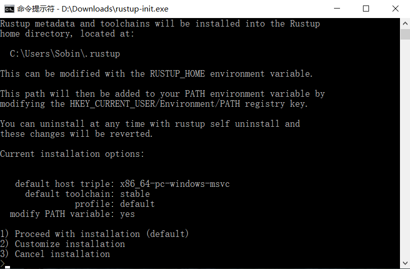
上图显示的是一个命令行安装向导。
如果你已经安装 MSVC （推荐），那么安装过程会非常的简单，输入 1 并回车，直接进入第二步。
如果你安装的是 MinGW，那么你需要输入 2 （自定义安装），然后系统会询问你 Default host triple? ，请将上图中 default host triple 的 "msvc" 改为 "gnu" 再输入安装程序：
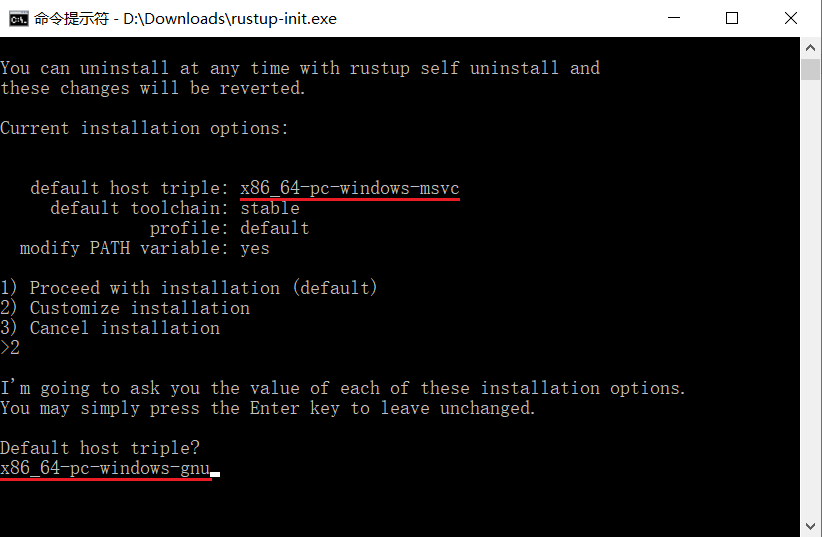
其它属性都默认。
设置完所有选项，会回到安装向导界面（第一张图），这是我们输入 1 并回车即可。
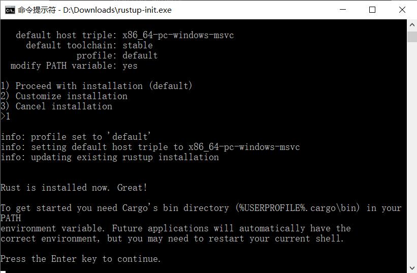
进行到这一步就完成了 Rust 的安装，可以通过以下命令测试：
rustc -V # 注意的大写的 V
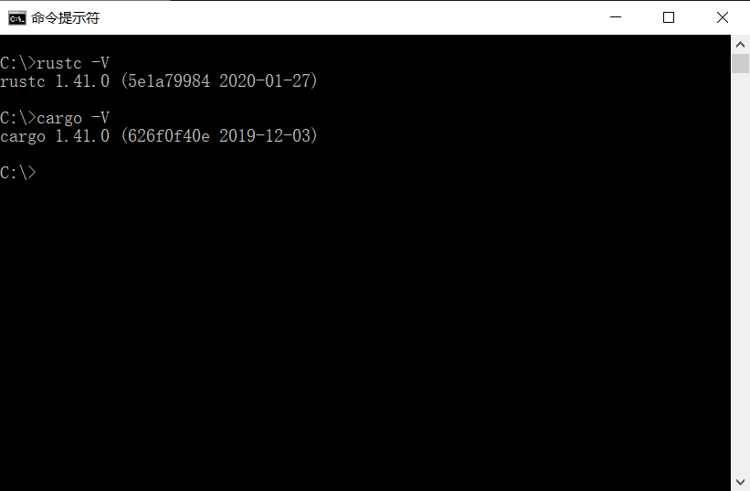
如果以上两个命令能够输出你安装的版本号，就是安装成功了。
更多下载方式可以查阅：https://forge.rust-lang.org/infra/other-installation-methods.html
下载完 Visual Studio Code 安装包之后启动安装向导安装（此步骤不在此赘述）。
安装完 Visual Studio Code （下文简称 VSCode）之后运行 VSCode。
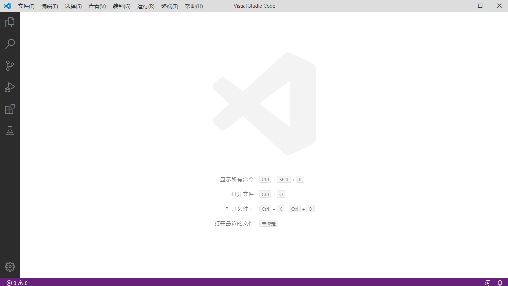
在左边栏里找到 "Extensions"，并查找 "Chinese"，安装简体中文扩展，使界面变成中文。（如果你愿意用英文界面或计算机不支持中文字符，此步骤可以跳过）。
用同样的方法再安装 rust-analyzer 和 Native Debug 两个扩展。
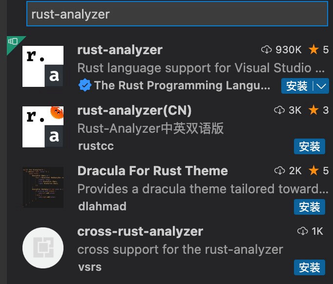
重新启动 VSCode，Rust 的开发环境就搭建好了。
现在新建一个文件夹，如 runoob-greeting。
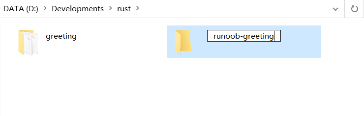
在 VSCode 中打开新建的文件夹：
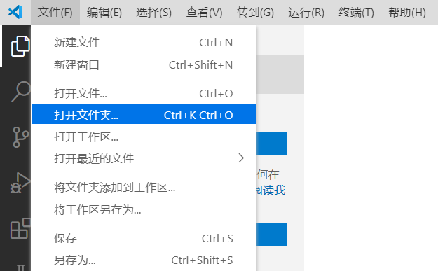
打开文件夹之后选择菜单栏中的"终端"-"新建终端"，会打开一个新的终端：
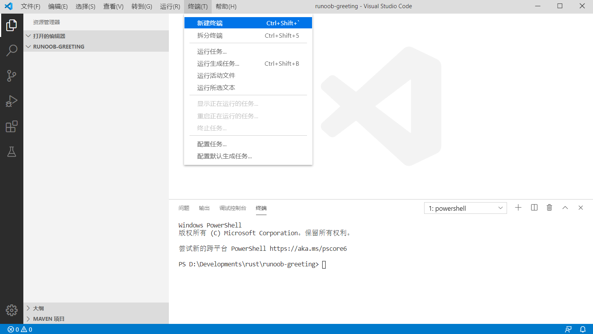
在终端中输入命令：
cargo new greeting
当前文件下下会构建一个名叫 greeting 的 Rust 工程目录。
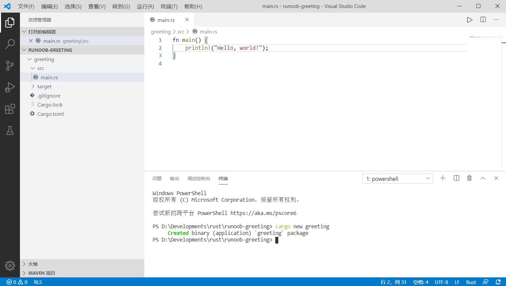
现在在终端里输入以下三个命令：
cd ./greeting cargo build cargo run
系统在创建工程时会生成一个 Hello, world 源程序 main.rs，这时会被编译并运行：
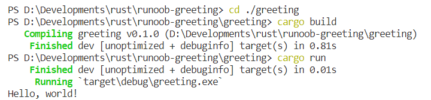
至此，你成功的构建了一个 Rust 命令行程序！
有关在 VSCode 中调试程序的问题，详见 Cargo 教程。
在 Rust 开发中，几乎所有的项目都是使用 Cargo 来进行管理和构建的，因为它提供了便捷的工作流程和强大的功能，使得 Rust 开发变得更加高效和可靠。
Cargo 是 Rust 的官方构建系统和包管理器。它主要有两个作用：
主要有两个作用：
项目管理：Cargo 用于创建、构建和管理 Rust 项目。通过 Cargo，你可以轻松地创建新项目，管理项目的依赖关系，并执行项目的构建、运行和测试等操作。
包管理器：Cargo 还充当了 Rust 的包管理器。它允许开发者在项目中引入和管理依赖项（如第三方库），并确保这些依赖项的版本管理和兼容性。
Cargo 主要特性和功能：
依赖管理：Cargo 通过 Cargo.toml 文件管理项目的依赖，这个文件列出了项目所需的所有外部库以及它们的版本。
构建系统：Cargo 使用 Rust 编译器（rustc）来构建项目，它会自动处理依赖的编译和链接。
包注册表：Cargo 与 crates.io 这个 Rust 社区的包注册表交互，允许开发者搜索、添加和管理第三方库。
构建配置：通过 Cargo.toml 和 Cargo.lock 文件，Cargo 允许开发者配置构建选项，如编译器选项、特性（features）和目标平台。
项目模板：Cargo 提供了创建新项目的模板，可以通过 cargo new 命令快速启动新项目。
测试：Cargo 提供了一个简单的命令 cargo test 来运行项目的单元测试。
基准测试：Cargo 支持使用 cargo bench 命令进行基准测试。
发布：通过 cargo publish 命令，开发者可以将他们的库发布到 crates.io 上，供其他开发者使用。
自定义构建脚本：Cargo 允许使用自定义的构建脚本来处理更复杂的构建需求。
多目标项目：Cargo 支持在一个项目中定义多个目标，如可执行文件、库、测试和基准测试。
跨平台构建：Cargo 支持跨多个平台构建 Rust 程序，包括 Windows、macOS、Linux 以及各种嵌入式系统。
构建缓存：为了加快构建速度，Cargo 使用构建缓存来存储编译后的依赖。
离线工作：Cargo 支持在没有互联网连接的情况下工作，它会自动使用本地缓存的依赖。
插件系统：Cargo 允许开发者编写插件来扩展其功能。
环境变量：Cargo 支持通过环境变量来覆盖默认的构建和运行行为。
Cargo 除了创建工程以外还具备构建（build）工程、运行（run）工程等一系列功能，构建和运行分别对应以下命令：
cargo new <project-name>：创建一个新的 Rust 项目。cargo build：编译当前项目。cargo run：编译并运行当前项目。cargo check：检查当前项目的语法和类型错误。cargo test：运行当前项目的单元测试。cargo update：更新 Cargo.toml 中指定的依赖项到最新版本。cargo --help：查看 Cargo 的帮助信息。cargo publish：将 Rust 项目发布到 crates.io。cargo clean：清理构建过程中生成的临时文件和目录。Cargo 是一个不错的构建工具，如果使 VSCode 与它相配合那么 VSCode 将会是一个十分便捷的开发环境。
在上一章中我们建立了 greeting 工程，现在我们用 VSCode 打开 greeting 文件夹（注意不是 runoob-greeting）。
打开 greeting 之后，在里面新建一个新的文件夹 .vscode （注意 vscode 前面的点，如果有这个文件夹就不需要新建了）。在新建的 .vscode 文件夹里新建两个文件 tasks.json 和 launch.json，文件内容如下：
然后点击 VSCode 左栏的 "运行"。
如果你使用的是 MSVC 选择 "(Windows) 启动"。
如果使用的是 MinGW 且安装了 GDB 选择"(gdb)启动"，gdb 启动前请注意填写 launch.json 中的 "miDebuggerPath"。
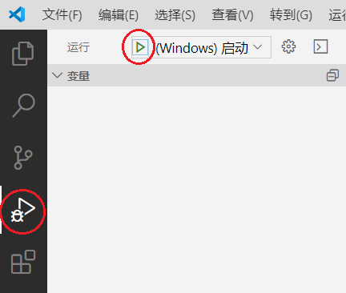
程序就会开始调试运行了。运行输出将出现在"调试控制台"中：
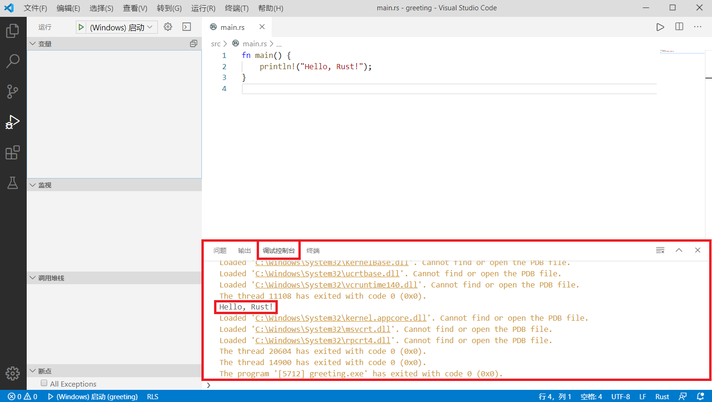
调试程序的方法与其它环境相似，只需要在行号的左侧点击红点就可以设置断点，在运行中遇到断点会暂停，以供开发者监视实时变量的值。
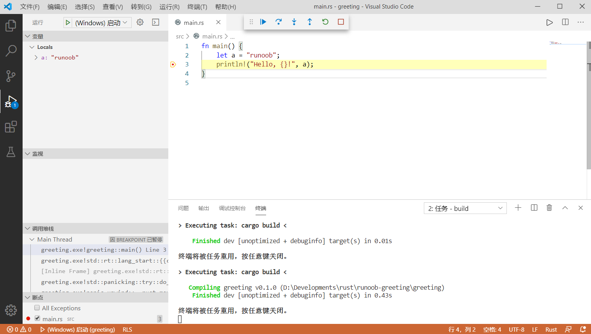
在正式学习 Rust 语言以前，我们需要先学会怎样输出一段文字到命令行，这几乎是学习每一门语言之前必备的技能，因为输出到命令行几乎是语言学习阶段程序表达结果的唯一方式。
在之前的 Hello, World 程序中大概已经告诉了大家输出字符串的方式，但并不全面，大家可能很疑惑为什么 println!( "Hello World") 中的 println 后面还有一个 ! 符号，难道 Rust 函数之后都要加一个感叹号？显然并不是这样。println 不是一个函数，而是一个宏规则。这里不需要更深刻的挖掘宏规则是什么，后面的章节中会专门介绍，并不影响接下来的一段学习。
Rust 输出文字的方式主要有两种：println!() 和 print!()。这两个"函数"都是向命令行输出字符串的方法，区别仅在于前者会在输出的最后附加输出一个换行符。当用这两个"函数"输出信息的时候，第一个参数是格式字符串，后面是一串可变参数，对应着格式字符串中的"占位符"，这一点与 C 语言中的 printf 函数很相似。但是，Rust 中格式字符串中的占位符不是 "% + 字母" 的形式，而是一对 {}。
使用 rustc 命令编译 runoob.rs 文件：
$ rustc runoob.rs # 编译 runoob.rs 文件
编译后会生成 runoob 可执行文件：
$ ./runoob # 执行 runoob
以上程序的输出结果是：
a is 12
如果我想把 a 输出两遍，那岂不是要写成：
println!("a is {}, a again is {}", a, a);
其实有更好的写法：
println!("a is {0}, a again is {0}", a);
在 {} 之间可以放一个数字，它将把之后的可变参数当作一个数组来访问，下标从 0 开始。
如果要输出 { 或 } 怎么办呢？格式字符串中通过 {{ 和 }} 分别转义代表 { 和 }。但是其他常用转义字符与 C 语言里的转义字符一样，都是反斜杠开头的形式。
fn main() {
println!("{{}}");
}
以上程序的输出结果是：
{}变量，基本类型，函数，注释和控制流，这些几乎是每种编程语言都具有的编程概念。
这些基础概念将存在于每个 Rust 程序中，及早学习它们将使你以最快的速度学习 Rust 的使用。
首先必须说明，Rust 是强类型语言，但具有自动判断变量类型的能力。这很容易让人与弱类型语言产生混淆。
默认情况下，Rust 中的变量是不可变的，除非使用 mut 关键字声明为可变变量。
let a = 123; // 不可变变量 let mut b = 10; // 可变变量
如果要声明变量，需要使用 let 关键字。例如：
let a = 123;
只学习过 JavaScript 的开发者对这句话很敏感，只学习过 C 语言的开发者对这句话很不理解。
在这句声明语句之后，以下三行代码都是被禁止的：
a = "abc"; a = 4.56; a = 456;
第一行的错误在于当声明 a 是 123 以后，a 就被确定为整型数字，不能把字符串类型的值赋给它。
第二行的错误在于自动转换数字精度有损失，Rust 语言不允许精度有损失的自动数据类型转换。
第三行的错误在于 a 不是个可变变量。
前两种错误很容易理解，但第三个是什么意思？难道 a 不是个变量吗？
这就牵扯到了 Rust 语言为了高并发安全而做的设计：在语言层面尽量少的让变量的值可以改变。所以 a 的值不可变。但这不意味着 a 不是"变量"（英文中的 variable），官方文档称 a 这种变量为"不可变变量"。
如果我们编写的程序的一部分在假设值永远不会改变的情况下运行，而我们代码的另一部分在改变该值，那么代码的第一部分可能就不会按照设计的意图去运转。由于这种原因造成的错误很难在事后找到。这是 Rust 语言设计这种机制的原因。
当然，使变量变得"可变"（mutable）只需一个 mut 关键字。
let mut a = 123; a = 456;
这个程序是正确的。
既然不可变变量是不可变的，那不就是常量吗？为什么叫变量？
变量和常量还是有区别的。在 Rust 中，以下程序是合法的：
let a = 123; // 可以编译，但可能有警告，因为该变量没有被使用 let a = 456;
但是如果 a 是常量就不合法：
const a: i32 = 123; let a = 456;
变量的值可以"重新绑定"，但在"重新绑定"以前不能私自被改变，这样可以确保在每一次"绑定"之后的区域里编译器可以充分的推理程序逻辑。 虽然 Rust 有自动判断类型的功能，但有些情况下声明类型更加方便：
let a: u64 = 123;
这里声明了 a 为无符号 64 位整型变量，如果没有声明类型，a 将自动被判断为有符号 32 位整型变量，这对于 a 的取值范围有很大的影响。
Rust 是静态类型语言，在变量声明时可以显式指定类型，但通常可以依赖类型推断。
基本类型: i32 (32位有符号整数), u32 (32位无符号整数), f64 (64位浮点数), bool (布尔类型), char (字符)
Rust 函数通过 fn 关键字定义，函数的返回类型通过箭头符号 -> 指定。
如果函数没有返回值，类型默认为 ()（即空元组）。
if 表达式
loop 循环: loop 是 Rust 中的无限循环，可以使用 break 退出循环。
while 循环
for 循环
Rust 中的所有权是独特的内存管理机制，核心概念包括所有权 (ownership)、借用 (borrowing) 和引用 (reference)。
所有权规则:
let s1 = String::from("hello");
let s2 = s1; // s1 的所有权被转移给了 s2
// println!("{}", s1); // 此处编译会报错，因为 s1 已不再拥有该值借用和引用: 借用允许引用数据而不获取所有权，通过 & 符号实现。
fn main() {
let s = String::from("hello");
let len = calculate_length(&s); // 借用
println!("The length of '{}' is {}.", s, len);
}
fn calculate_length(s: &String) -> usize {
s.len()
}
结构体用于创建自定义类型，字段可以包含多种数据类型。
枚举允许定义可能的几种数据类型中的一种。
match 是 Rust 中强大的控制流工具，类似于 switch 语句。
Rust 有两种主要的错误处理方式：Result<T, E> 和 Option<T>。
Result:
Option:
Rust 使用生命周期来确保引用的有效性。生命周期标注用 'a 等来表示，但常见的情况下，编译器会自动推导。
重影的概念与其他面向对象语言里的"重写"（Override）或"重载"（Overload）是不一样的。重影就是刚才讲述的所谓"重新绑定"，之所以加引号就是为了在没有介绍这个概念的时候代替一下概念。
重影就是指变量的名称可以被重新使用的机制：
这段程序的运行结果：
The value of x is: 12
重影与可变变量的赋值不是一个概念，重影是指用同一个名字重新代表另一个变量实体，其类型、可变属性和值都可以变化。但可变变量赋值仅能发生值的变化。
let mut s = "123"; s = s.len();
这段程序会出错：不能给字符串变量赋整型值。
在 Rust 中，无论是简单的数值计算、逻辑判断，还是更复杂的模式匹配和位操作，运算符都承担着核心的角色。
Rust 既支持我们熟悉的 C 系语言常见运算符，也提供了一些独特的操作符号。熟练掌握这些运算符，不仅能让代码更简洁高效，也能帮助你更好地理解 Rust 的语义。
| 运算符 | 说明 | 示例 | 结果 |
|---|---|---|---|
+ |
加法 | 5 + 2 |
7 |
- |
减法 | 5 - 2 |
3 |
* |
乘法 | 5 * 2 |
10 |
/ |
除法（整除） | 5 / 2 |
2 （整数） |
% |
取余 | 5 % 2 |
1 |
输出：
a + b = 13 a - b = 7 a * b = 30 a / b = 3 a % b = 1
Rust 没有 ** 或 ^ 这样的乘方运算符（注意：^ 是按位异或），如果要做乘方，需要使用内置的 pow 或 powf 方法：
.pow(exp: u32).powf(exp: f64)输出：
2^3 = 8
输出：
2^2.5 = 5.656854249492381
| 运算符 | 说明 | 示例 | 结果 |
|---|---|---|---|
== |
相等 | 5 == 5 |
true |
!= |
不相等 | 5 != 2 |
true |
> |
大于 | 5 > 2 |
true |
< |
小于 | 5 < 2 |
false |
>= |
大于等于 | 5 >= 5 |
true |
<= |
小于等于 | 2 <= 5 |
true |
输出：
x == y : false x != y : true x > y : false x < y : true x >= y : false x <= y : true
| 运算符 | 说明 | 示例 | 结果 |
|---|---|---|---|
&& |
逻辑与（AND） | true && false |
false |
|| |
逻辑或（OR） | true || false |
true |
! |
逻辑非（NOT） | !true |
false |
输出：
a && b = false a || b = true !a = false
| 运算符 | 说明 | 示例 | 结果 |
|---|---|---|---|
& |
按位与 | 5 & 3 |
1 |
| |
按位或 | 5 | 3 |
7 |
^ |
按位异或 | 5 ^ 3 |
6 |
! |
按位取反 | !5 |
-6 |
<< |
左移 | 5 << 1 |
10 |
>> |
右移 | 5 >> 1 |
2 |
输出：
x & y = 1000 x | y = 1110 x ^ y = 110 !x = 11110101 x << 1 = 10100 x >> 1 = 101
| 运算符 | 说明 | 示例 | 结果 |
|---|---|---|---|
= |
赋值 | let mut x = 5; x = 3; |
x = 3 |
+= |
加并赋值 | x += 2 |
x = x + 2 |
-= |
减并赋值 | x -= 2 |
x = x - 2 |
*= |
乘并赋值 | x *= 2 |
x = x * 2 |
/= |
除并赋值 | x /= 2 |
x = x / 2 |
%= |
取余并赋值 | x %= 2 |
x = x % 2 |
&= |= ^= <<= >>= |
位运算复合赋值 | x &= 2 |
类似 |
输出：
n += 3 -> 8 n *= 2 -> 16 n >>= 1 -> 8
| 运算符 | 说明 | 示例 |
|---|---|---|
.. |
范围（不含右端） | 0..5 产生 0 到 4 |
..= |
范围（含右端） | 0..=5 产生 0 到 5 |
as |
类型转换 | 5 as f32 |
? |
错误传播（在 Result 中） |
some()?; |
* |
解引用 | *ptr |
& |
取引用 | &x |
ref |
绑定为引用 | let ref y = x; |
输出：
1 2 3 1 2 3 *b = 10
Rust 语言中的基础数据类型有以下几种。
整数型简称整型，按照比特位长度和有无符号分为以下种类：
| 位长度 | 有符号 | 无符号 |
|---|---|---|
| 8-bit | i8 | u8 |
| 16-bit | i16 | u16 |
| 32-bit | i32 | u32 |
| 64-bit | i64 | u64 |
| 128-bit | i128 | u128 |
| arch | isize | usize |
isize 和 usize 两种整数类型是用来衡量数据大小的，它们的位长度取决于所运行的目标平台，如果是 32 位架构的处理器将使用 32 位位长度整型。
整数的表述方法有以下几种：
| 进制 | 例 |
|---|---|
| 十进制 | 98_222 |
| 十六进制 | 0xff |
| 八进制 | 0o77 |
| 二进制 | 0b1111_0000 |
| 字节(只能表示 u8 型) | b'A' |
很显然，有的整数中间存在一个下划线，这种设计可以让人们在输入一个很大的数字时更容易判断数字的值大概是多少。
Rust 与其它语言一样支持 32 位浮点数（f32）和 64 位浮点数（f64）。默认情况下，64.0 将表示 64 位浮点数，因为现代计算机处理器对两种浮点数计算的速度几乎相同，但 64 位浮点数精度更高。
用一段程序反映数学运算：
许多运算符号之后加上 = 号是自运算的意思，例如：
sum += 1 等同于 sum = sum + 1。
注意：Rust 不支持 ++ 和 --，因为这两个运算符出现在变量的前后会影响代码可读性，减弱了开发者对变量改变的意识能力。
布尔型用 bool 表示，值只能为 true 或 false。
字符型用 char 表示。
Rust的 char 类型大小为 4 个字节，代表 Unicode标量值，这意味着它可以支持中文，日文和韩文字符等非英文字符甚至表情符号和零宽度空格在 Rust 中都是有效的 char 值。
Unicode 值的范围从 U+0000 到 U+D7FF 和 U+E000 到 U+10FFFF （包括两端）。 但是，"字符"这个概念并不存在于 Unicode 中，因此您对"字符"是什么的直觉可能与Rust中的字符概念不匹配。所以一般推荐使用字符串储存 UTF-8 文字（非英文字符尽可能地出现在字符串中）。
注意：由于中文文字编码有两种（GBK 和 UTF-8），所以编程中使用中文字符串有可能导致乱码的出现，这是因为源程序与命令行的文字编码不一致，所以在 Rust 中字符串和字符都必须使用 UTF-8 编码，否则编译器会报错。
元组是用一对 ( ) 包括的一组数据，可以包含不同种类的数据：
数组用一对 [ ] 包括的同类型数据。
Rust 中的注释方式与其它语言（C、Java）一样，支持两种注释方式：
在 Rust 中使用 // 可以使其之后到第一个换行符的内容变成注释。
在这种规则下，三个正斜杠 /// 依然是合法的注释开始。所以 Rust 可以用 /// 作为说明文档注释的开头：
程序中的函数 add 就会拥有一段优雅的注释，并可以显示在 IDE 中：
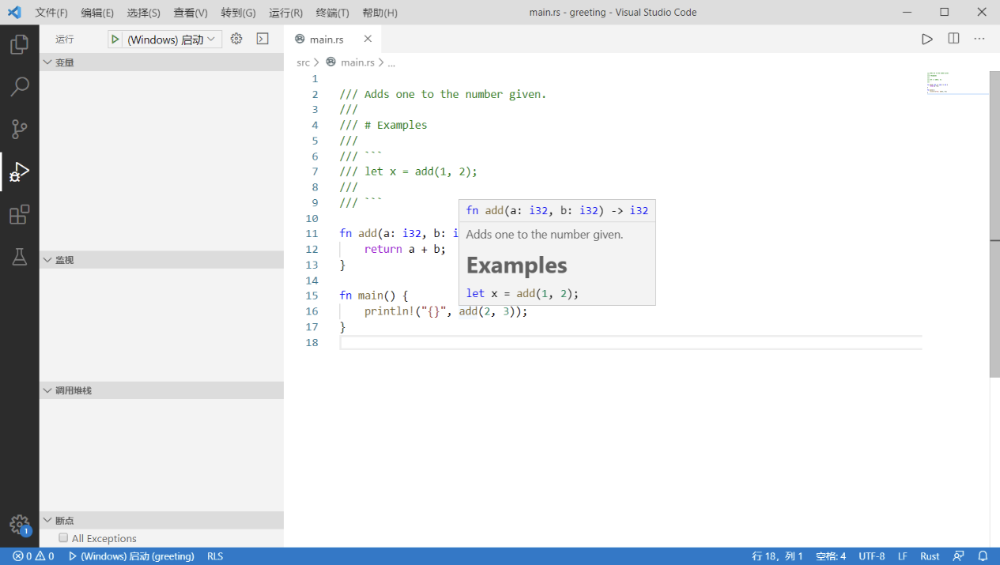
Tip：Cargo 具有 cargo doc 功能，开发者可以通过这个命令将工程中的说明注释转换成 HTML 格式的说明文档。
函数在 Rust 语言中是普遍存在的。
通过之前的章节已经可以了解到 Rust 函数的基本形式：
fn <函数名> ( <参数> ) <函数体>
其中 Rust 函数名称的命名风格是小写字母以下划线分割：
运行结果：
Hello, world! Hello, runoob!
注意，我们在源代码中的 main 函数之后定义了another_function。 Rust不在乎您在何处定义函数，只需在某个地方定义它们即可。
Rust 中定义函数如果需要具备参数必须声明参数名称和类型：
运行结果：
x 的值为 : 5 y 的值为 : 6
Rust 函数体由一系列可以以表达式（Expression）结尾的语句（Statement）组成。到目前为止，我们仅见到了没有以表达式结尾的函数，但已经将表达式用作语句的一部分。
语句是执行某些操作且没有返回值的步骤。例如：
let a = 6;
这个步骤没有返回值，所以以下语句不正确：
let a = (let b = 2);
表达式有计算步骤且有返回值。以下是表达式（假设出现的标识符已经被定义）：
a = 7 b + 2 c * (a + b)
Rust 中可以在一个用 {} 包括的块里编写一个较为复杂的表达式：
运行结果：
x 的值为 : 5 y 的值为 : 4
很显然，这段程序中包含了一个表达式块：
{
let x = 3;
x + 1
};
而且在块中可以使用函数语句，最后一个步骤是表达式，此表达式的结果值是整个表达式块所代表的值。这种表达式块叫做函数体表达式。
注意：x + 1 之后没有分号，否则它将变成一条语句！
这种表达式块是一个合法的函数体。而且在 Rust 中，函数定义可以嵌套：
在上一个嵌套的例子中已经显示了 Rust 函数声明返回值类型的方式：在参数声明之后用 -> 来声明函数返回值的类型（不是 : ）。
在函数体中，随时都可以以 return 关键字结束函数运行并返回一个类型合适的值。这也是最接近大多数开发者经验的做法：
但是 Rust 不支持自动返回值类型判断！如果没有明确声明函数返回值的类型，函数将被认为是"纯过程"，不允许产生返回值，return 后面不能有返回值表达式。这样做的目的是为了让公开的函数能够形成可见的公报。
注意：函数体表达式并不能等同于函数体，它不能使用 return 关键字。
在 Rust 语言中的条件语句是这种格式的：
在上述程序中有条件 if 语句，这个语法在很多其它语言中很常见，但也有一些区别：首先，条件表达式 number < 5 不需要用小括号包括（注意，不需要不是不允许）；但是 Rust 中的 if 不存在单语句不用加 {} 的规则，不允许使用一个语句代替一个块。尽管如此，Rust 还是支持传统 else-if 语法的：
运行结果：
b 为 1
Rust 中的条件表达式必须是 bool 类型，例如下面的程序是错误的：
虽然 C/C++ 语言中的条件表达式用整数表示，非 0 即真，但这个规则在很多注重代码安全性的语言中是被禁止的。
结合之前章学习的函数体表达式我们加以联想：
if <condition> { block 1 } else { block 2 }
这种语法中的 { block 1 } 和 { block 2 } 可不可以是函数体表达式呢？
答案是肯定的！也就是说，在 Rust 中我们可以使用 if-else 结构实现类似于三元条件运算表达式 (A ? B : C) 的效果：
运行结果：
number 为 1
注意：两个函数体表达式的类型必须一样！且必须有一个 else 及其后的表达式块。
Rust 除了灵活的条件语句以外，循环结构的设计也十分成熟。这一点作为身经百战的开发者应该能感觉出来。
while 循环是最典型的条件语句循环：
运行结果：
1 2 3 EXIT
Rust 语言到此教程编撰之日还没有 do-while 的用法，但是 do 被规定为保留字，也许以后的版本中会用到。
在 C 语言中 for 循环使用三元语句控制循环，但是 Rust 中没有这种用法，需要用 while 循环来代替：
for 循环是最常用的循环结构，常用来遍历一个线性数据结构（比如数组）。for 循环遍历数组：
运行结果：
值为 : 10 值为 : 20 值为 : 30 值为 : 40 值为 : 50
这个程序中的 for 循环完成了对数组 a 的遍历。a.iter() 代表 a 的迭代器（iterator），在学习有关于对象的章节以前不做赘述。
当然，for 循环其实是可以通过下标来访问数组的：
运行结果：
a[0] = 10 a[1] = 20 a[2] = 30 a[3] = 40 a[4] = 50
身经百战的开发者一定遇到过几次这样的情况：某个循环无法在开头和结尾判断是否继续进行循环，必须在循环体中间某处控制循环的进行。如果遇到这种情况，我们经常会在一个 while (true) 循环体里实现中途退出循环的操作。
Rust 语言有原生的无限循环结构 —— loop：
运行结果：
'R' 'U' 'N'
loop 循环可以通过 break 关键字类似于 return 一样使整个循环退出并给予外部一个返回值。这是一个十分巧妙的设计，因为 loop 这样的循环常被用来当作查找工具使用，如果找到了某个东西当然要将这个结果交出去：
运行结果：
'O' 的索引为 3
Rust 中的迭代器（Iterator）是一个强大且灵活的工具，用于对集合（如数组、向量、链表等）进行逐步访问和操作。
Rust 的迭代器是惰性求值的，这意味着迭代器本身不会立即执行操作，而是在你需要时才会产生值。
迭代器允许你以一种声明式的方式来遍历序列，如数组、切片、链表等集合类型的元素。
迭代器背后的核心思想是将数据处理过程与数据本身分离，使代码更清晰、更易读、更易维护。
在 Rust 中，迭代器通过实现 Iterator trait 来定义。
最基本的 trait 方法是 next，用于逐一返回迭代器中的下一个元素，直到返回 None 表示结束。
迭代器遵循以下原则：
惰性求值 (Laziness)：Rust 中的迭代器是惰性的，意味着迭代器本身不会立即进行任何计算或操作，直到你显式地请求数据。这使得迭代器在性能上表现良好，可以避免不必要的计算。
所有权和借用检查 (Ownership and Borrowing Checks)：Rust 迭代器严格遵守所有权和借用规则，避免数据竞争和内存错误。迭代器的生命周期与底层数据相关联，确保数据的安全访问。
链式调用 (Chaining)：Rust 迭代器支持链式调用，即可以将多个迭代器方法链接在一起进行组合操作，这使得代码简洁且具有高度可读性。例如，通过使用 .map()、.filter()、.collect() 等方法，可以创建复杂的数据处理流水线。
高效内存管理 (Efficient Memory Management)：迭代器避免了不必要的内存分配，因为大多数操作都是惰性求值的，并且在使用时直接进行遍历操作。这对于处理大数据集合尤其重要。
抽象和通用性 (Abstraction and Generality)：Rust 的迭代器通过 Iterator trait 实现抽象和通用性。任何实现了 Iterator trait 的类型都可以在不同的上下文中作为迭代器使用。此设计提高了代码的重用性和模块化。
最常见的方式是通过集合的 .iter()、.iter_mut() 或 .into_iter() 方法来创建迭代器：
.iter()：返回集合的不可变引用迭代器。.iter_mut()：返回集合的可变引用迭代器。.into_iter()：将集合转移所有权并生成值迭代器。使用 iter() 方法创建借用迭代器：
let vec = vec![1, 2, 3, 4, 5]; let iter = vec.iter();
使用 iter_mut() 方法创建可变借用迭代器：
let mut vec = vec![1, 2, 3, 4, 5]; let iter_mut = vec.iter_mut();
使用 into_iter() 方法创建获取所有权的迭代器：
let vec = vec![1, 2, 3, 4, 5]; let into_iter = vec.into_iter();
Rust 的迭代器提供了丰富的方法来处理集合中的元素，其中一些常见的方法包括：
map()：对每个元素应用给定的转换函数。filter()：根据给定的条件过滤集合中的元素。fold()：对集合中的元素进行累积处理。skip()：跳过指定数量的元素。take()：获取指定数量的元素。enumerate()：为每个元素提供索引。使用 map() 方法对每个元素进行转换：
let vec = vec![1, 2, 3, 4, 5]; let squared_vec: Vec<i32> = vec.iter().map(|x| x * x).collect();
使用 filter() 方法根据条件过滤元素：
let vec = vec![1, 2, 3, 4, 5]; let filtered_vec: Vec<i32> = vec.into_iter().filter(|&x| x % 2 == 0).collect();
Rust 提供了 for 循环语法来遍历迭代器中的元素，是一种更加简洁和直观的遍历方式。
Rust 的 for 循环底层实际上是使用迭代器的。
let vec = vec![1, 2, 3, 4, 5];
for &num in vec.iter() {
println!("{}", num);
}在这个循环中，vec.iter() 返回一个迭代器，for 循环遍历这个迭代器，并将每个元素赋值给 num 变量，然后执行循环体中的代码。
使用迭代器直到它被完全消耗。
迭代器有许多可以消耗迭代器的方法，它们会通过执行迭代来返回最终结果（比如总和、集合等），这些方法会消耗迭代器本身。
collect()：将迭代器转换为集合（如向量、哈希集）。sum()：计算迭代器中所有元素的和。product()：计算迭代器中所有元素的乘积。count()：返回迭代器中元素的个数。迭代器适配器允许你通过方法链来改变或过滤迭代器的内容，而不会立刻消耗它。
map()：对每个元素应用某个函数，并返回一个新的迭代器。filter()：过滤出满足条件的元素。take(n)：只返回前 n 个元素的迭代器。skip(n)：跳过前 n 个元素，返回剩下的元素迭代器。let v = vec![1, 2, 3, 4, 5]; let doubled: Vec<i32> = v.iter().map(|x| x * 2).collect(); assert_eq!(doubled, vec![2, 4, 6, 8, 10]);
可以将多个迭代器适配器链接在一起，形成迭代器链。
使用 collect 方法将迭代器的元素收集到某种集合中。
let arr = [1, 2, 3, 4, 5]; let sum: i32 = arr.into_iter().sum();
正如前面提到的，Rust 迭代器是惰性的，这意味着像 map()、filter() 等不会立刻执行操作，直到调用像 collect() 这样的消耗性方法才会真正处理数据。这使得迭代器处理更加高效，因为避免了不必要的计算。
你也可以为自己的类型实现 Iterator trait，只需定义 next() 方法即可。
例如，实现一个从 1 到 5 的简单迭代器：
如果需要在多线程环境中并行化操作，rayon crate 提供了并行迭代器的支持，通过 .par_iter() 代替 .iter()，可以在多线程环境中加速迭代操作。
迭代器的生命周期与它所迭代的元素的生命周期相关联。迭代器可以借用元素，也可以取得元素的所有权。这在迭代器的实现中通过生命周期参数来控制。
迭代器适配器经常与闭包一起使用，闭包允许你为迭代器操作提供定制逻辑。
迭代器通常是非常高效的，因为它们允许编译器做出优化。例如，编译器可以内联迭代器适配器的调用，并且可以利用迭代器的惰性求值特性。
下面实例演示了如何使用迭代器对一个数组进行遍历，并输出数组中的元素。
以上代码中，我们首先定义了一个包含整数的数组 numbers，然后使用 iter() 方法获取数组的迭代器，并通过 for 循环遍历迭代器，输出数组中的每个元素。接着使用迭代器的 map() 方法对数组中的每个元素进行平方运算，并使用 collect() 方法将结果收集到一个新的数组 squared_numbers 中。最后输出了平方后的数组。
运行该程序，可以看到输出了原始数组中的每个元素，以及经过平方运算后的新数组：
Iterating through the array: 1 2 3 4 5 Squared numbers: [1, 4, 9, 16, 25]
这个例子演示了 Rust 中迭代器的基本用法，包括遍历、转换和收集结果。
以下实例使用 filter() 方法对一个数组进行过滤，并输出过滤后的结果：
以上代码中，我们首先定义了一个包含整数的数组 numbers，然后使用迭代器的 filter() 方法对数组进行过滤，筛选出其中的偶数。在 filter() 方法的闭包中，我们使用模运算来判断元素是否为偶数。最后使用 cloned() 方法来克隆每个偶数的值，并使用 collect() 方法将结果收集到一个新的数组 even_numbers 中。最终输出了筛选后的结果。
运行该程序，可以看到输出了数组中的所有偶数：
Even numbers: [2, 4, 6, 8, 10]
这个例子演示了 Rust 中迭代器的 filter() 方法的使用，以及如何结合其他方法来实现对数组的筛选操作。
以下是一些 Rust 中常用的迭代器方法，以及它们的简要说明和示例：
| 方法名 | 描述 | 示例 |
|---|---|---|
next() |
返回迭代器中的下一个元素。 | let mut iter = (1..5).into_iter(); while let Some(val) = iter.next() { println!("{}", val); } |
size_hint() |
返回迭代器中剩余元素数量的下界和上界。 | let iter = (1..10).into_iter(); println!("{:?}", iter.size_hint()); |
count() |
计算迭代器中的元素数量。 | let count = (1..10).into_iter().count(); |
nth() |
返回迭代器中第 n 个元素。 | let third = (0..10).into_iter().nth(2); |
last() |
返回迭代器中的最后一个元素。 | let last = (1..5).into_iter().last(); |
all() |
如果迭代器中的所有元素都满足某个条件，返回 true。 |
let all_positive = (1..=5).into_iter().all(|x| x > 0); |
any() |
如果迭代器中的至少一个元素满足某个条件，返回 true。 |
let any_negative = (1..5).into_iter().any(|x| x < 0); |
find() |
返回迭代器中第一个满足某个条件的元素。 | let first_even = (1..10).into_iter().find(|x| x % 2 == 0); |
find_map() |
对迭代器中的元素应用一个函数，返回第一个返回 Some 的结果。 |
let first_letter = "hello".chars().find_map(|c| if c.is_alphabetic() { Some(c) } else { None }); |
map() |
对迭代器中的每个元素应用一个函数。 | let squares: Vec<i32> = (1..5).into_iter().map(|x| x * x).collect();
|
filter() |
保留迭代器中满足某个条件的元素。 | let evens: Vec<i32> = (1..10).into_iter().filter(|x| x % 2 == 0).collect(); |
filter_map() |
对迭代器中的元素应用一个函数，如果函数返回 Some，则保留结果。 |
let chars: Vec<char> = "hello".chars().filter_map(|c| if c.is_alphabetic() { Some(c.to_ascii_uppercase()) } else { None }).collect(); |
map_while() |
对迭代器中的元素应用一个函数，直到函数返回 None。 |
let first_three = (1..).into_iter().map_while(|x| if x <= 3 { Some(x) } else { None }); |
take_while() |
从迭代器中取出满足某个条件的元素，直到不满足为止。 | let first_five = (1..10).into_iter().take_while(|x| x <= 5).collect::<Vec<_>>() |
skip_while() |
跳过迭代器中满足某个条件的元素，直到不满足为止。 | let odds: Vec<i32> = (1..10).into_iter().skip_while(|x| x % 2 == 0).collect(); |
for_each() |
对迭代器中的每个元素执行某种操作。 | let mut counter = 0; (1..5).into_iter().for_each(|x| counter += x); |
fold() |
对迭代器中的元素进行折叠，使用一个累加器。 | let sum: i32 = (1..5).into_iter().fold(0, |acc, x| acc + x); |
try_fold() |
对迭代器中的元素进行折叠，可能在遇到错误时提前返回。 | let result: Result = (1..5).into_iter().try_fold(0, |acc, x| if x == 3 { Err("Found the number 3") } else { Ok(acc + x) }); |
scan() |
对迭代器中的元素进行状态化的折叠。 | let sum: Vec<i32> = (1..5).into_iter().scan(0, |acc, x| { *acc += x; Some(*acc) }).collect(); |
take() |
从迭代器中取出最多 n 个元素。 | let first_five = (1..10).into_iter().take(5).collect::<Vec<_>>() |
skip() |
跳过迭代器中的前 n 个元素。 | let after_five = (1..10).into_iter().skip(5).collect::<Vec<_>>() |
zip() |
将两个迭代器中的元素打包成元组。 | let zipped = (1..3).zip(&['a', 'b', 'c']).collect::<Vec<_>>() |
cycle() |
重复迭代器中的元素，直到无穷。 | let repeated = (1..3).into_iter().cycle().take(7).collect::<Vec<_>>() |
chain() |
连接多个迭代器。 | let combined = (1..3).chain(4..6).collect::<Vec<_>>() |
rev() |
反转迭代器中的元素顺序。 | let reversed = (1..4).into_iter().rev().collect::<Vec<_>>() |
enumerate() |
为迭代器中的每个元素添加索引。 | let enumerated = (1..4).into_iter().enumerate().collect::<Vec<_>>() |
peeking_take_while() |
取出满足条件的元素，同时保留迭代器的状态，可以继续取出后续元素。 | let (first, rest) = (1..10).into_iter().peeking_take_while(|&x| x < 5); |
step_by() |
按照指定的步长返回迭代器中的元素。 | let even_numbers = (0..10).into_iter().step_by(2).collect::<Vec<_>>() |
fuse() |
创建一个额外的迭代器，它在迭代器耗尽后仍然可以调用 next() 方法。 |
let mut iter = (1..5).into_iter().fuse(); while iter.next().is_some() {} |
inspect() |
在取出每个元素时执行一个闭包，但不改变元素。 | let mut counter = 0; (1..5).into_iter().inspect(|x| println!("Inspecting: {}", x)).for_each(|x| println!("Processing: {}", x));
|
same_items() |
比较两个迭代器是否产生相同的元素序列。 | let equal = (1..5).into_iter().same_items((1..5).into_iter()); |
Rust 的迭代器是一个功能强大且灵活的工具，它允许以声明式的方式处理序列。迭代器的设计考虑了安全性、性能和表达力，是 Rust 语言的核心特性之一。通过迭代器，Rust 程序员可以写出既安全又高效的代码。
Rust 中的闭包是一种匿名函数，它可以捕获并存储其所在环境中的变量。
闭包允许在定义作用域之外访问变量，并且可以在需要时将其移动或借用给闭包使用。
闭包在 Rust 中被广泛应用于函数式编程、并发编程和事件驱动编程等领域。
闭包和普通函数都能封装一段逻辑，但闭包多了一项核心能力——捕获外部环境中的变量。下表列出两者的主要差异：
| 特性 | 闭包 | 函数 |
|---|---|---|
| 匿名性 | 没有名称，通常赋值给变量 | 有固定的 fn 名称 |
| 环境捕获 | 可以捕获外部变量 | 不能捕获外部变量 |
| 定义方式 | |参数| 表达式 | fn 名称(参数) |
| 类型推导 | 参数和返回值类型通常可以省略 | 必须显式指定参数和返回值类型 |
| 存储与传递 | 可以作为变量、参数、返回值 | 同样支持 |
闭包的基本语法如下：
let closure_name = |参数列表| 表达式或语句块;
参数可以有类型注解，也可以省略——Rust 编译器会根据上下文推断它们。
闭包的调用方式与普通函数完全一致，在变量名后加括号并传入参数即可。
闭包最核心的特性是能够捕获其所在作用域中的变量。这是闭包与普通函数的本质区别。
闭包可以通过三种方式捕获外部变量：
| 捕获方式 | 对应 Rust 语义 | 说明 |
|---|---|---|
| 按引用捕获 | 类似 &T | 默认行为，闭包借用变量，外部仍可使用 |
| 可变借用捕获 | 类似 &mut T | 闭包需要修改变量，闭包本身须声明为 mut |
| 按值捕获 | 类似 T | 使用 move 关键字，将变量所有权移入闭包 |
对于实现了
Copytrait 的类型（如i32、bool），move只会复制一份值，外部变量仍然可用。因此演示所有权转移时应选用String、Vec等非Copy类型。
默认情况下，闭包以不可变引用的方式借用外部变量。借用结束后，外部作用域可以继续使用该变量。
如果闭包需要修改捕获的变量，Rust 会以可变引用的方式捕获。此时闭包本身必须声明为 mut。
通过在闭包前添加 move 关键字，闭包会获取所捕获变量的所有权。所有权转移后，外部作用域将无法再使用该变量。
当需要将闭包传递到另一个线程或返回到作用域之外时，move 尤为常用——它确保闭包持有所需数据的所有权，不会出现悬垂引用。
Rust 编译器会根据闭包捕获变量的方式，自动为闭包实现对应的 trait。理解这三个 trait 是使用闭包作为函数参数或返回值的关键。
| Trait | 捕获方式 | 可调用次数 | 典型场景 |
|---|---|---|---|
Fn | 不可变借用（&T） | 多次 | 只读访问捕获变量 |
FnMut | 可变借用（&mut T） | 多次 | 需要修改捕获变量 |
FnOnce | 获取所有权（T） | 仅一次 | 消耗捕获变量，之后不可再调用 |
三者的继承关系为：Fn 是 FnMut 的子 trait，FnMut 是 FnOnce 的子 trait。也就是说，一个实现了 Fn 的闭包，自动也实现了 FnMut 和 FnOnce。
注意：
move关键字只是强制获取所有权，并不意味着闭包一定是FnOnce。如果闭包体中并没有消耗捕获的值，那么即使加了move，闭包仍可能实现Fn（可多次调用）。
闭包可以作为函数参数传入，也可以作为函数的返回值返回。这是闭包在实际开发中最常见的两种用法。
将闭包作为参数时，需要用泛型约束指定闭包的 trait 类型。以下示例中，参数 F 被约束为 Fn(i32) -> i32，表示接收一个 i32 参数并返回 i32 的闭包。
由于闭包的类型是匿名的，返回闭包时需要使用 impl Trait 或 Box<dyn Trait> 来描述返回类型。
当返回的闭包类型在编译期可以确定时，使用 impl Fn 即可，无需堆分配。
当需要在运行时动态选择不同闭包返回时，使用 Box<dyn Fn> 将闭包分配到堆上。
| 方式 | 分配位置 | 适用场景 |
|---|---|---|
impl Fn | 栈 | 编译期可确定闭包类型，性能更优 |
Box<dyn Fn> | 堆 | 运行时动态选择闭包，或需要跨函数存储闭包 |
闭包在 Rust 的日常开发中随处可见，以下是几个最典型的应用场景。
闭包经常与迭代器方法配合使用，用于对集合元素进行批量处理。
在多线程编程中，闭包常用于定义线程的执行体。move 关键字在此场景下几乎是必选的，因为它将数据的所有权移入新线程，避免跨线程引用失效。
闭包可以返回 Result 或 Option 类型，配合迭代器方法实现简洁的错误处理逻辑。
Rust 的闭包是轻量级的。编译器会对闭包进行内联优化，使得闭包调用的开销接近于直接调用普通函数。闭包本身不引入额外的虚函数调用或堆分配（除非显式使用 Box）。
闭包的生命周期与它所捕获的变量密切相关。Rust 的生命周期系统确保闭包不会比它捕获的任何变量活得更长——如果闭包引用了一个局部变量，编译器会在编译期阻止你将闭包返回到该变量的作用域之外。
以下示例综合演示了闭包的声明、捕获外部变量、作为参数传递等核心用法。
运行该程序，输出如下：
Square of 5 is 25 Cube of 5 is 125
Rust 的闭包是一种强大的抽象，它提供了一种灵活且表达力强的方式来封装逻辑。
闭包可以捕获环境变量，并且可以作为参数传递或作为返回值返回。闭包与迭代器结合使用，可以方便地实现复杂的数据处理任务。
Rust 的闭包设计兼顾了安全性、性能和生命周期——编译器会在编译期确保闭包不会引用已失效的变量，并通过内联优化保证闭包调用的零开销抽象。
计算机程序必须在运行时管理它们所使用的内存资源。
大多数的编程语言都有管理内存的功能：
C/C++ 这样的语言主要通过手动方式管理内存，开发者需要手动的申请和释放内存资源。但为了提高开发效率，只要不影响程序功能的实现，许多开发者没有及时释放内存的习惯。所以手动管理内存的方式常常造成资源浪费。
Java 语言编写的程序在虚拟机（JVM）中运行，JVM 具备自动回收内存资源的功能。但这种方式常常会降低运行时效率，所以 JVM 会尽可能少的回收资源，这样也会使程序占用较大的内存资源。
所有权对大多数开发者而言是一个新颖的概念，它是 Rust 语言为高效使用内存而设计的语法机制。所有权概念是为了让 Rust 在编译阶段更有效地分析内存资源的有用性以实现内存管理而诞生的概念。
所有权有以下三条规则：
这三条规则是所有权概念的基础。
接下来将介绍与所有权概念有关的概念。
我们用下面这段程序描述变量范围的概念：
{
// 在声明以前，变量 s 无效
let s = "runoob";
// 这里是变量 s 的可用范围
}
// 变量范围已经结束，变量 s 无效变量范围是变量的一个属性，其代表变量的可行域，默认从声明变量开始有效直到变量所在域结束。
如果我们定义了一个变量并给它赋予一个值，这个变量的值存在于内存中。这种情况很普遍。但如果我们需要储存的数据长度不确定（比如用户输入的一串字符串），我们就无法在定义时明确数据长度，也就无法在编译阶段令程序分配固定长度的内存空间供数据储存使用。（有人说分配尽可能大的空间可以解决问题，但这个方法很不文明）。这就需要提供一种在程序运行时程序自己申请使用内存的机制——堆。本章所讲的所有"内存资源"都指的是堆所占用的内存空间。
有分配就有释放，程序不能一直占用某个内存资源。因此决定资源是否浪费的关键因素就是资源有没有及时的释放。
我们把字符串样例程序用 C 语言等价编写：
{很显然，Rust 中没有调用 free 函数来释放字符串 s 的资源（我知道这样在 C 语言中是不正确的写法，因为 "runoob" 不在堆中，这里假设它在）。Rust 之所以没有明示释放的步骤是因为在变量范围结束的时候，Rust 编译器自动添加了调用释放资源函数的步骤。
这种机制看似很简单了：它不过是帮助程序员在适当的地方添加了一个释放资源的函数调用而已。但这种简单的机制可以有效地解决一个史上最令程序员头疼的编程问题。
变量与数据交互方式主要有移动（Move）和克隆（Clone）两种：
多个变量可以在 Rust 中以不同的方式与相同的数据交互：
let x = 5; let y = x;
这个程序将值 5 绑定到变量 x，然后将 x 的值复制并赋值给变量 y。现在栈中将有两个值 5。此情况中的数据是"基本数据"类型的数据，不需要存储到堆中，仅在栈中的数据的"移动"方式是直接复制，这不会花费更长的时间或更多的存储空间。"基本数据"类型有这些：
但如果发生交互的数据在堆中就是另外一种情况：
let s1 = String::from("hello");
let s2 = s1;第一步产生一个 String 对象，值为 "hello"。其中 "hello" 可以认为是类似于长度不确定的数据，需要在堆中存储。
第二步的情况略有不同（这不是完全真的，仅用来对比参考）：
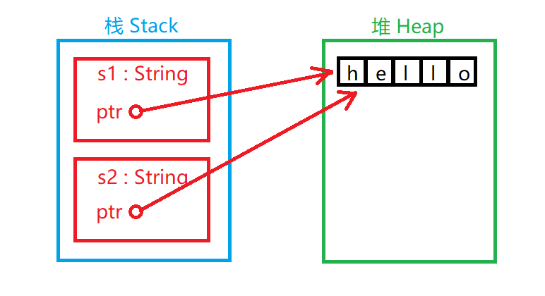
如图所示：两个 String 对象在栈中，每个 String 对象都有一个指针指向堆中的 "hello" 字符串。在给 s2 赋值时，只有栈中的数据被复制了，堆中的字符串依然还是原来的字符串。
前面我们说过，当变量超出范围时，Rust 自动调用释放资源函数并清理该变量的堆内存。但是 s1 和 s2 都被释放的话堆区中的 "hello" 被释放两次，这是不被系统允许的。为了确保安全，在给 s2 赋值时 s1 已经无效了。没错，在把 s1 的值赋给 s2 以后 s1 将不可以再被使用。下面这段程序是错的：
let s1 = String::from("hello");
let s2 = s1;
println!("{}, world!", s1); // 错误！s1 已经失效
所以实际情况是：
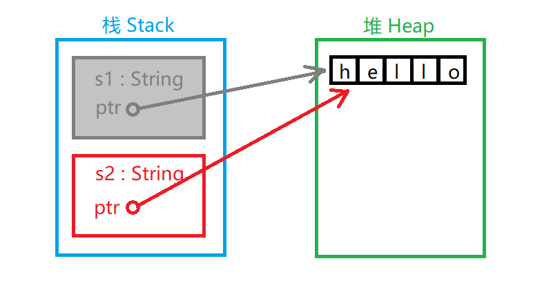
s1 名存实亡。
Rust会尽可能地降低程序的运行成本，所以默认情况下，长度较大的数据存放在堆中，且采用移动的方式进行数据交互。但如果需要将数据单纯的复制一份以供他用，可以使用数据的第二种交互方式——克隆。
运行结果：
s1 = hello, s2 = hello
这里是真的将堆中的 "hello" 复制了一份，所以 s1 和 s2 都分别绑定了一个值，释放的时候也会被当作两个资源。
当然，克隆仅在需要复制的情况下使用，毕竟复制数据会花费更多的时间。
对于变量来说这是最复杂的情况了。
如果将一个变量当作函数的参数传给其他函数，怎样安全的处理所有权呢？
下面这段程序描述了这种情况下所有权机制的运行原理：
如果将变量当作参数传入函数，那么它和移动的效果是一样的。
被当作函数返回值的变量所有权将会被移动出函数并返回到调用函数的地方，而不会直接被无效释放。
引用（Reference）是 C++ 开发者较为熟悉的概念。
如果你熟悉指针的概念，你可以把它看作一种指针。
实质上"引用"是变量的间接访问方式。
运行结果：
s1 is hello, s2 is hello
& 运算符可以取变量的"引用"。
当一个变量的值被引用时，变量本身不会被认定无效。因为"引用"并没有在栈中复制变量的值：
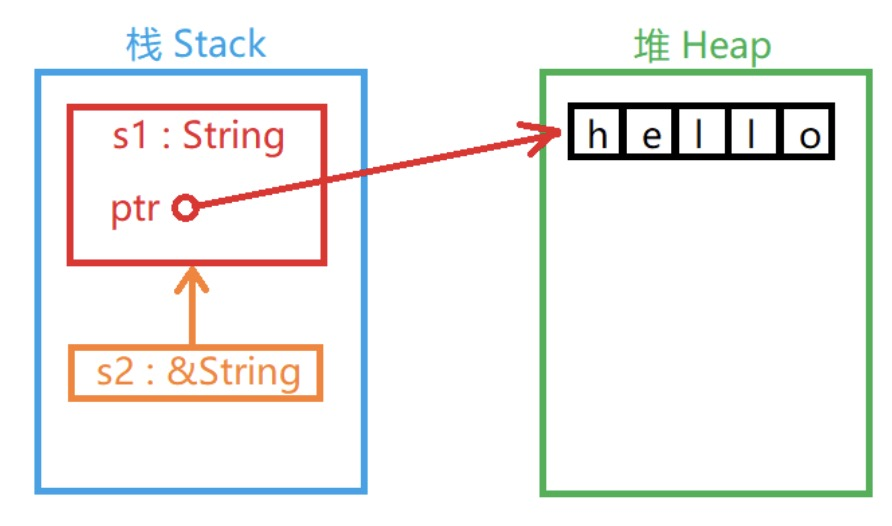
函数参数传递的道理一样：
运行结果：
The length of 'hello' is 5.
引用不会获得值的所有权。
引用只能租借（Borrow）值的所有权。
引用本身也是一个类型并具有一个值，这个值记录的是别的值所在的位置，但引用不具有所指值的所有权：
这段程序不正确：因为 s2 租借的 s1 已经将所有权移动到 s3，所以 s2 将无法继续租借使用 s1 的所有权。如果需要使用 s2 使用该值，必须重新租借：
这段程序是正确的。
既然引用不具有所有权，即使它租借了所有权，它也只享有使用权（这跟租房子是一个道理）。
如果尝试利用租借来的权利来修改数据会被阻止：
这段程序中 s2 尝试修改 s1 的值被阻止，租借的所有权不能修改所有者的值。
当然，也存在一种可变的租借方式，就像你租一个房子，如果物业规定房主可以修改房子结构，房主在租借时也在合同中声明赋予你这种权利，你是可以重新装修房子的：
这段程序就没有问题了。我们用 &mut 修饰可变的引用类型。
可变引用与不可变引用相比除了权限不同以外，可变引用不允许多重引用，但不可变引用可以：
这段程序不正确，因为多重可变引用了 s。
Rust 对可变引用的这种设计主要出于对并发状态下发生数据访问碰撞的考虑，在编译阶段就避免了这种事情的发生。
由于发生数据访问碰撞的必要条件之一是数据被至少一个使用者写且同时被至少一个其他使用者读或写，所以在一个值被可变引用时不允许再次被任何引用。
这是一个换了个名字的概念，如果放在有指针概念的编程语言里它就指的是那种没有实际指向一个真正能访问的数据的指针（注意，不一定是空指针，还有可能是已经释放的资源）。它们就像失去悬挂物体的绳子，所以叫"垂悬引用"。
"垂悬引用"在 Rust 语言里不允许出现，如果有，编译器会发现它。
下面是一个垂悬的典型案例：
很显然，伴随着 dangle 函数的结束，其局部变量的值本身没有被当作返回值，被释放了。但它的引用却被返回，这个引用所指向的值已经不能确定的存在，故不允许其出现。
切片（Slice）是对数据值的部分引用。
切片这个名字往往出现在生物课上，我们做样本玻片的时候要从生物体上获取切片，以供在显微镜上观察。在 Rust 中，切片的意思大致也是这样，只不过它从数据取材引用。
最简单、最常用的数据切片类型是字符串切片（String Slice）。
运行结果：
broadcast=broad+cast
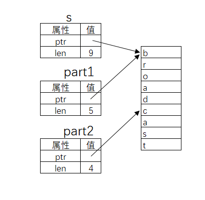
上图解释了字符串切片的原理（注：Rust 中的字符串类型实质上记录了字符在内存中的起始位置和其长度，我们暂时了解到这一点）。
使用 .. 表示范围的语法在循环章节中出现过。x..y 表示 [x, y) 的数学含义。.. 两边可以没有运算数：
..y 等价于 0..y x.. 等价于位置 x 到数据结束 .. 等价于位置 0 到结束
注意：到目前为止，尽量不要在字符串中使用非英文字符，因为编码的问题。具体原因会在"字符串"章节叙述。
被切片引用的字符串禁止更改其值：
这段程序不正确。
s 被部分引用，禁止更改其值。
实际上，到目前为止你一定疑惑为什么每一次使用字符串都要这样写String::from("runoob") ，直接写 "runoob" 不行吗？
事已至此我们必须分辨这两者概念的区别了。在 Rust 中有两种常用的字符串类型：str 和 String。str 是 Rust 核心语言类型，就是本章一直在讲的字符串切片（String Slice），常常以引用的形式出现（&str）。
凡是用双引号包括的字符串常量整体的类型性质都是 &str：
let s = "hello";
这里的 s 就是一个 &str 类型的变量。
String 类型是 Rust 标准公共库提供的一种数据类型，它的功能更完善——它支持字符串的追加、清空等实用的操作。String 和 str 除了同样拥有一个字符开始位置属性和一个字符串长度属性以外还有一个容量（capacity）属性。
String 和 str 都支持切片，切片的结果是 &str 类型的数据。
注意：切片结果必须是引用类型，但开发者必须自己明示这一点:
let slice = &s[0..3];
有一个快速的办法可以将 String 转换成 &str：
let s1 = String::from("hello");
let s2 = &s1[..];
除了字符串以外，其他一些线性数据结构也支持切片操作，例如数组：
运行结果：
1 3 5
Rust 中的结构体（Struct）与元组（Tuple）都可以将若干个类型不一定相同的数据捆绑在一起形成整体，但结构体的每个成员和其本身都有一个名字，这样访问它成员的时候就不用记住下标了。元组常用于非定义的多值传递，而结构体用于规范常用的数据结构。结构体的每个成员叫做"字段"。
这是一个结构体定义：
struct Site {
domain: String,
name: String,
nation: String,
found: u32
}注意：如果你常用 C/C++，请记住在 Rust 里 struct 语句仅用来定义，不能声明实例，结尾不需要 ; 符号，而且每个字段定义之后用 , 分隔。
Rust 很多地方受 JavaScript 影响，在实例化结构体的时候用 JSON 对象的 key: value 语法来实现定义：
如果你不了解 JSON 对象，你可以不用管它，记住格式就可以了：
结构体类名 {
字段名 : 字段值,
...
}这样的好处是不仅使程序更加直观，还不需要按照定义的顺序来输入成员的值。
如果正在实例化的结构体有字段名称和现存变量名称一样的，可以简化书写：
有这样一种情况：你想要新建一个结构体的实例，其中大部分属性需要被设置成与现存的一个结构体属性一样，仅需更改其中的一两个字段的值，可以使用结构体更新语法：
let site = Site {
domain: String::from("www.runoob.com"),
name: String::from("RUNOOB"),
..runoob
};注意：..runoob 后面不可以有逗号。这种语法不允许一成不变的复制另一个结构体实例，意思就是说至少重新设定一个字段的值才能引用其他实例的值。
有一种更简单的定义和使用结构体的方式：元组结构体。
元组结构体是一种形式是元组的结构体。
与元组的区别是它有名字和固定的类型格式。它存在的意义是为了处理那些需要定义类型（经常使用）又不想太复杂的简单数据：
struct Color(u8, u8, u8); struct Point(f64, f64); let black = Color(0, 0, 0); let origin = Point(0.0, 0.0);
"颜色"和"点坐标"是常用的两种数据类型，但如果实例化时写个大括号再写上两个名字就为了可读性牺牲了便捷性，Rust 不会遗留这个问题。元组结构体对象的使用方式和元组一样，通过 . 和下标来进行访问：
运行结果：
black = (0, 0, 0) origin = (0, 0)
结构体必须掌握字段值所有权，因为结构体失效的时候会释放所有字段。
这就是为什么本章的案例中使用了 String 类型而不使用 &str 的原因。
但这不意味着结构体中不定义引用型字段，这需要通过"生命周期"机制来实现。
但现在还难以说明"生命周期"概念，所以只能在后面章节说明。
调试中，完整地显示出一个结构体实例是非常有用的。但如果我们手动的书写一个格式会非常的不方便。所以 Rust 提供了一个方便地输出一整个结构体的方法：
如第一行所示：一定要导入调试库 #[derive(Debug)] ，之后在 println 和 print 宏中就可以用 {:?} 占位符输出一整个结构体：
rect1 is Rectangle { width: 30, height: 50 }
如果属性较多的话可以使用另一个占位符 {:#?} 。
输出结果：
rect1 is Rectangle {
width: 30,
height: 50
}
方法（Method）和函数（Function）类似，只不过它是用来操作结构体实例的。
如果你学习过一些面向对象的语言，那你一定很清楚函数一般放在类定义里并在函数中用 this 表示所操作的实例。
Rust 语言不是面向对象的，从它所有权机制的创新可以看出这一点。但是面向对象的珍贵思想可以在 Rust 实现。
结构体方法的第一个参数必须是 &self，不需声明类型，因为 self 不是一种风格而是关键字。
计算一个矩形的面积：
输出结果：
rect1's area is 1500
请注意，在调用结构体方法的时候不需要填写 self ，这是出于对使用方便性的考虑。
一个多参数的例子：
运行结果：
false
这个程序计算 rect1 是否比 rect2 更宽。
之所以"结构体方法"不叫"结构体函数"是因为"函数"这个名字留给了这种函数：它在 impl 块中却没有 &self 参数。
这种函数不依赖实例，但是使用它需要声明是在哪个 impl 块中的。
一直使用的 String::from 函数就是一个"关联函数"。
运行结果：
Rectangle { width: 30, height: 50 }
贴士：结构体 impl 块可以写几次，效果相当于它们内容的拼接！
结构体可以只作为一种象征而无需任何成员：
struct UnitStruct;
我们称这种没有身体的结构体为单元结构体（Unit Struct）。
枚举类在 Rust 中并不像其他编程语言中的概念那样简单，但依然可以十分简单的使用：
运行结果：
Papery
书分为纸质书（Papery book）和电子书（Electronic book）。
如果你现在正在开发一个图书管理系统，你需要描述两种书的不同属性（纸质书有索书号，电子书只有 URL），你可以为枚举类成员添加元组属性描述：
enum Book {
Papery(u32),
Electronic(String),
}
let book = Book::Papery(1001);
let ebook = Book::Electronic(String::from("url://..."));
如果你想为属性命名，可以用结构体语法：
enum Book {
Papery { index: u32 },
Electronic { url: String },
}
let book = Book::Papery{index: 1001};虽然可以如此命名，但请注意，并不能像访问结构体字段一样访问枚举类绑定的属性。访问的方法在 match 语法中。
枚举的目的是对某一类事物的分类，分类的目的是为了对不同的情况进行描述。基于这个原理，往往枚举类最终都会被分支结构处理（许多语言中的 switch ）。 switch 语法很经典，但在 Rust 中并不支持，很多语言摒弃 switch 的原因都是因为 switch 容易存在因忘记添加 break 而产生的串接运行问题，Java 和 C# 这类语言通过安全检查杜绝这种情况出现。
Rust 通过 match 语句来实现分支结构。先认识一下如何用 match 处理枚举类：
运行结果:
Papery book 1001
match 块也可以当作函数表达式来对待，它也是可以有返回值的：
match 枚举类实例 {
分类1 => 返回值表达式,
分类2 => 返回值表达式,
...
}但是所有返回值表达式的类型必须一样！
如果把枚举类附加属性定义成元组，在 match 块中需要临时指定一个名字：
match 除了能够对枚举类进行分支选择以外，还可以对整数、浮点数、字符和字符串切片引用（&str）类型的数据进行分支选择。其中，浮点数类型被分支选择虽然合法，但不推荐这样使用，因为精度问题可能会导致分支错误。
对非枚举类进行分支选择时必须注意处理例外情况，即使在例外情况下没有任何要做的事 . 例外情况用下划线 _ 表示：
Option 是 Rust 标准库中的枚举类，这个类用于填补 Rust 不支持 null 引用的空白。
许多语言支持 null 的存在（C/C++、Java），这样很方便，但也制造了极大的问题，null 的发明者也承认这一点，"一个方便的想法造成累计 10 亿美元的损失"。
null 经常在开发者把一切都当作不是 null 的时候给予程序致命一击：毕竟只要出现一个这样的错误，程序的运行就要彻底终止。
为了解决这个问题，很多语言默认不允许 null，但在语言层面支持 null 的出现（常在类型前面用 ? 符号修饰）。
Java 默认支持 null，但可以通过 @NotNull 注解限制出现 null，这是一种应付的办法。
Rust 在语言层面彻底不允许空值 null 的存在，但无奈null 可以高效地解决少量的问题，所以 Rust 引入了 Option 枚举类：
enum Option<T> {
Some(T),
None,
}如果你想定义一个可以为空值的类，你可以这样：
let opt = Option::Some("Hello");如果你想针对 opt 执行某些操作，你必须先判断它是否是 Option::None：
运行结果：
Hello
如果你的变量刚开始是空值，你体谅一下编译器，它怎么知道值不为空的时候变量是什么类型的呢？
所以初始值为空的 Option 必须明确类型：
运行结果：
opt is nothing
这种设计会让空值编程变得不容易，但这正是构建一个稳定高效的系统所需要的。由于 Option 是 Rust 编译器默认引入的，在使用时可以省略 Option:: 直接写 None 或者 Some()。
Option 是一种特殊的枚举类，它可以含值分支选择：
放入主函数运行结果：
zero
这段程序的目的是判断 i 是否是数字 0，如果是就打印 zero。
现在用 if let 语法缩短这段代码：
let i = 0;
if let 0 = i {
println!("zero");
}if let 语法格式如下：
if let 匹配值 = 源变量 {
语句块
}可以在之后添加一个 else 块来处理例外情况。
if let 语法可以认为是只区分两种情况的 match 语句的"语法糖"（语法糖指的是某种语法的原理相同的便捷替代品）。
对于枚举类依然适用：
任何一门编程语言如果不能组织代码都是难以深入的，几乎没有一个软件产品是由一个源文件编译而成的。
本教程到目前为止所有的程序都是在一个文件中编写的，主要是为了方便学习 Rust 语言的语法和概念。
对于一个工程来讲，组织代码是十分重要的。
Rust 中有三个重要的组织概念：箱、包、模块。
"箱"是二进制程序文件或者库文件，存在于"包"中。
"箱"是树状结构的，它的树根是编译器开始运行时编译的源文件所编译的程序。
注意："二进制程序文件"不一定是"二进制可执行文件"，只能确定是是包含目标机器语言的文件，文件格式随编译环境的不同而不同。
当我们使用 Cargo 执行 new 命令创建 Rust 工程时，工程目录下会建立一个 Cargo.toml 文件。工程的实质就是一个包，包必须由一个 Cargo.toml 文件来管理，该文件描述了包的基本信息以及依赖项。
一个包最多包含一个库"箱"，可以包含任意数量的二进制"箱"，但是至少包含一个"箱"（不管是库还是二进制"箱"）。
当使用 cargo new 命令创建完包之后，src 目录下会生成一个 main.rs 源文件，Cargo 默认这个文件为二进制箱的根，编译之后的二进制箱将与包名相同。
对于一个软件工程来说，我们往往按照所使用的编程语言的组织规范来进行组织，组织模块的主要结构往往是树。Java 组织功能模块的主要单位是类，而 JavaScript 组织模块的主要方式是 function。
这些先进的语言的组织单位可以层层包含，就像文件系统的目录结构一样。Rust 中的组织单位是模块（Module）。
mod nation {
mod government {
fn govern() {}
}
mod congress {
fn legislate() {}
}
mod court {
fn judicial() {}
}
}
这是一段描述法治国家的程序：国家（nation）包括政府（government）、议会（congress）和法院（court），分别有行政、立法和司法的功能。我们可以把它转换成树状结构：
nation ├── government │ └── govern ├── congress │ └── legislate └── court └── judicial
在文件系统中，目录结构往往以斜杠在路径字符串中表示对象的位置，Rust 中的路径分隔符是 :: 。
路径分为绝对路径和相对路径。绝对路径从 crate 关键字开始描述。相对路径从 self 或 super 关键字或一个标识符开始描述。例如：
crate::nation::government::govern();
是描述 govern 函数的绝对路径，相对路径可以表示为：
nation::government::govern();
现在你可以尝试在一个源程序里定义类似的模块结构并在主函数中使用路径。
如果你这样做，你一定会发现它不正确的地方：government 模块和其中的函数都是私有（private）的，你不被允许访问它们。
Rust 中有两种简单的访问权：公共（public）和私有（private）。
默认情况下，如果不加修饰符，模块中的成员访问权将是私有的。
如果想使用公共权限，需要使用 pub 关键字。
对于私有的模块，只有在与其平级的位置或下级的位置才能访问，不能从其外部访问。这段程序是能通过编译的。请注意观察 court 模块中 super 的访问方法。
如果模块中定义了结构体，结构体除了其本身是私有的以外，其字段也默认是私有的。所以如果想使用模块中的结构体以及其字段，需要 pub 声明：
运行结果：
I'd like Wheat toast please
枚举类枚举项可以内含字段，但不具备类似的性质:
运行结果：
Blue
使用过 Java 的开发者在编程时往往非常讨厌最外层的 class 块——它的名字与文件名一模一样，因为它就表示文件容器，尽管它很繁琐但我们不得不写一遍来强调"这个类是文件所包含的类"。
不过这样有一些好处：起码它让开发者明明白白的意识到了类包装的存在，而且可以明确的描述类的继承关系。
在 Rust 中，模块就像是 Java 中的类包装，但是文件一开头就可以写一个主函数，这该如何解释呢？
每一个 Rust 文件的内容都是一个"难以发现"的模块。
让我们用两个文件来揭示这一点：
运行结果：
This is the main module. This is the 2nd module.
use 关键字能够将模块标识符引入当前作用域：
这段程序能够通过编译。
因为 use 关键字把 govern 标识符导入到了当前的模块下，可以直接使用。
这样就解决了局部模块路径过长的问题。
当然，有些情况下存在两个相同的名称，且同样需要导入，我们可以使用 as 关键字为标识符添加别名：
这里有两个 govern 函数，一个是 nation 下的，一个是 government 下的，我们用 as 将 nation 下的取别名 nation_govern。两个名称可以同时使用。
use 关键字可以与 pub 关键字配合使用：
Rust 官方标准库字典：https://doc.rust-lang.org/stable/std/all.html
在学习了本章的概念之后，我们可以轻松的导入系统库来方便的开发程序了：
运行结果：
1
所有的系统库模块都是被默认导入的，所以在使用的时候只需要使用 use 关键字简化路径就可以方便的使用了。
Rust 采用了一种独特的错误处理机制，没有异常（Exception），没有 try/catch。它将错误分为两类，用不同的方式处理：
panic! 宏终止程序Result<T, E> 枚举这种设计迫使开发者在编译期就处理可能的错误，而不是在运行时才发现遗漏。
panic! 宏用于表示程序遇到了无法继续执行的严重错误。调用时会：
运行结果：
thread 'main' panicked at '发生了严重错误', src/main.rs:2:5 note: run with `RUST_BACKTRACE=1` environment variable to display a backtrace.
输出的两行信息：
设置 RUST_BACKTRACE=1 环境变量可以看到完整的调用栈，帮助定位 panic 的根源：
# Linux / macOS RUST_BACKTRACE=1 cargo run # Windows PowerShell $env:RUST_BACKTRACE=1; cargo run
回溯输出会列出从 panic 发生位置到 main 函数的完整调用链。当 panic 发生在深层调用中时，这个信息非常有用。
何时使用
panic!：代码中出现了不应该发生的逻辑错误（bug），比如访问越界、解引用空指针、违反了不可变的契约。对于外部输入导致的可预期错误，应使用Result。
Result 是 Rust 标准库中用于表示可能失败的操作的枚举：
enum Result<T, E> {
Ok(T), // 操作成功，包含结果值
Err(E), // 操作失败，包含错误信息
}
Rust 标准库中所有可能失败的函数都返回 Result。例如打开文件：
当你只关心成功的情况时，if let 比 match 更简洁：
如果你确定操作不会失败（或在原型阶段不想处理错误），可以用这两个快捷方法：
| 方法 | 行为 | 失败时的 panic 信息 |
|---|---|---|
.unwrap() |
成功返回 T，失败直接 panic! |
使用默认的错误信息 |
.expect("msg") |
成功返回 T，失败直接 panic! |
使用自定义的错误信息（更易调试） |
建议：生产代码中优先使用
expect而非unwrap，因为自定义的错误信息能让你在 panic 时快速定位问题。更好的做法是使用?运算符将错误传播给调用者。
在实际开发中，函数遇到错误时往往不想自己处理，而是将错误传播给调用者。Rust 提供了 ? 运算符来简化这一操作。
先看手动传播的写法——冗长但清晰：
使用 ? 运算符，同样的逻辑可以简化为：
还可以链式调用，进一步简化：
fn read_file(path: &str) -> Result<String, io::Error> {
let mut content = String::new();
File::open(path)?.read_to_string(&mut content)?;
Ok(content)
}
? 运算符的工作原理：
重要限制：
?运算符只能用在返回Result（或Option）的函数中。从 Rust 1.39 起，main函数也可以返回Result。
默认的 main 函数返回 ()，不能使用 ?。但可以让 main 返回 Result：
在实际项目中，你通常需要根据不同的错误类型做不同的处理。Rust 通过 kind() 方法实现这一点：
运行结果（当文件不存在时）：
文件不存在，请检查路径
io::ErrorKind 常用的变体：
| ErrorKind | 含义 |
|---|---|
NotFound |
文件或目录不存在 |
PermissionDenied |
权限不足 |
AlreadyExists |
文件已存在（创建时） |
ConnectionRefused |
连接被拒绝 |
TimedOut |
操作超时 |
InvalidInput |
参数无效 |
在项目中，你通常需要定义自己的错误类型来表示业务逻辑中的错误：
第三方库推荐：在实际项目中，可以使用
thiserror库自动派生Display和From实现，大幅减少样板代码。对于应用层代码，anyhow库提供了便捷的anyhow::Result类型，适合快速开发。
除了 Result，Rust 还有另一个重要的枚举用于处理"可能没有值"的情况——Option<T>：
enum Option<T> {
Some(T), // 有值
None, // 没有值
}
Option 用于替代其他语言中的 null。Rust 中没有 null，任何可能为空的值都必须用 Option 包装：
Option 与 Result 的对比：
| 对比项 | Option<T> | Result<T, E> |
|---|---|---|
| 用途 | 值可能存在或不存在 | 操作可能成功或失败 |
| 成功 | Some(T) |
Ok(T) |
| 失败 | None（无额外信息） |
Err(E)（包含错误原因） |
| 典型场景 | 查找、可选字段、默认值 | 文件操作、网络请求、解析 |
| 转换 | ok_or(err) → Result |
ok() → Option |
| 场景 | 推荐方式 | 说明 |
|---|---|---|
| 程序遇到不可修复的 bug | panic!("原因") |
终止程序，用于不应该发生的情况 |
| 操作可能失败 | 返回 Result<T, E> |
强制调用者处理错误 |
| 在函数内传播错误 | ? 运算符 |
失败时自动 return Err，成功时取出值 |
| 快速原型 / 测试 | .expect("原因") |
失败时 panic，但有清晰的错误信息 |
| 值可能不存在 | Option<T> |
用 Some / None 替代 null |
| 按错误类型分别处理 | e.kind() |
匹配具体的错误变体 |
| 自定义错误类型 | 实现 Display + From |
配合 ? 实现自动转换 |
Rust 的错误处理哲学：错误是类型系统的一部分，而不是控制流的例外。编译器会强制你处理每一种可能的错误情况，这让你的程序在运行时更加可靠。
泛型是一个编程语言不可或缺的机制。
C++ 语言中用"模板"来实现泛型，而 C 语言中没有泛型的机制，这也导致 C 语言难以构建类型复杂的工程。
泛型机制是编程语言用于表达类型抽象的机制，一般用于功能确定、数据类型待定的类，如链表、映射表等。
这是一个对整型数字选择排序的方法：
运行结果：
max = 6
这是一个简单的取最大值程序，可以用于处理 i32 数字类型的数据，但无法用于 f64 类型的数据。通过使用泛型我们可以使这个函数可以利用到各个类型中去。但实际上并不是所有的数据类型都可以比大小，所以接下来一段代码并不是用来运行的，而是用来描述一下函数泛型的语法格式：
在之前我们学习的 Option 和 Result 枚举类就是泛型的。
Rust 中的结构体和枚举类都可以实现泛型机制。
struct Point<T> {
x: T,
y: T
}这是一个点坐标结构体，T 表示描述点坐标的数字类型。我们可以这样使用：
let p1 = Point {x: 1, y: 2};
let p2 = Point {x: 1.0, y: 2.0};使用时并没有声明类型，这里使用的是自动类型机制，但不允许出现类型不匹配的情况如下：
let p = Point {x: 1, y: 2.0};x 与 1 绑定时就已经将 T 设定为 i32，所以不允许再出现 f64 的类型。如果我们想让 x 与 y 用不同的数据类型表示，可以使用两个泛型标识符：
struct Point<T1, T2> {
x: T1,
y: T2
}在枚举类中表示泛型的方法诸如 Option 和 Result：
enum Option<T> {
Some(T),
None,
}
enum Result<T, E> {
Ok(T),
Err(E),
}结构体与枚举类都可以定义方法，那么方法也应该实现泛型的机制，否则泛型的类将无法被有效的方法操作。
运行结果：
p.x = 1
注意，impl 关键字的后方必须有 <T>，因为它后面的 T 是以之为榜样的。但我们也可以为其中的一种泛型添加方法：
impl Point<f64> {
fn x(&self) -> f64 {
self.x
}
}
impl 块本身的泛型并没有阻碍其内部方法具有泛型的能力：
impl<T, U> Point<T, U> {
fn mixup<V, W>(self, other: Point<V, W>) -> Point<T, W> {
Point {
x: self.x,
y: other.y,
}
}
}方法 mixup 将一个 Point<T, U> 点的 x 与 Point<V, W> 点的 y 融合成一个类型为 Point<T, W> 的新点。
特性（trait）概念接近于 Java 中的接口（Interface），但两者不完全相同。特性与接口相同的地方在于它们都是一种行为规范，可以用于标识哪些类有哪些方法。
特性在 Rust 中用 trait 表示：
trait Descriptive {
fn describe(&self) -> String;
}
Descriptive 规定了实现者必需有 describe(&self) -> String 方法。
我们用它实现一个结构体：
格式是：
impl <特性名> for <所实现的类型名>
Rust 同一个类可以实现多个特性，每个 impl 块只能实现一个。
这是特性与接口的不同点：接口只能规范方法而不能定义方法，但特性可以定义方法作为默认方法，因为是"默认"，所以对象既可以重新定义方法，也可以不重新定义方法使用默认的方法：
运行结果：
Cali 24
如果我们将 impl Descriptive for Person 块中的内容去掉，那么运行结果就是：
[Object]
很多情况下我们需要传递一个函数做参数，例如回调函数、设置按钮事件等。在 Java 中函数必须以接口实现的类实例来传递，在 Rust 中可以通过传递特性参数来实现：
fn output(object: impl Descriptive) {
println!("{}", object.describe());
}
任何实现了 Descriptive 特性的对象都可以作为这个函数的参数，这个函数没必要了解传入对象有没有其他属性或方法，只需要了解它一定有 Descriptive 特性规范的方法就可以了。当然，此函数内也无法使用其他的属性与方法。
特性参数还可以用这种等效语法实现：
fn output<T: Descriptive>(object: T) {
println!("{}", object.describe());
}这是一种风格类似泛型的语法糖，这种语法糖在有多个参数类型均是特性的情况下十分实用：
fn output_two<T: Descriptive>(arg1: T, arg2: T) {
println!("{}", arg1.describe());
println!("{}", arg2.describe());
}
特性作类型表示时如果涉及多个特性，可以用 + 符号表示，例如：
fn notify(item: impl Summary + Display) fn notify<T: Summary + Display>(item: T)
注意：仅用于表示类型的时候，并不意味着可以在 impl 块中使用。
复杂的实现关系可以使用 where 关键字简化，例如：
fn some_function<T: Display + Clone, U: Clone + Debug>(t: T, u: U)
可以简化成：
fn some_function<T, U>(t: T, u: U) -> i32
where T: Display + Clone,
U: Clone + Debug
在了解这个语法之后，泛型章节中的"取最大值"案例就可以真正实现了：
运行结果：
maximum of arr is 5
Tip: 由于需要声明 compare 函数的第二参数必须与实现该特性的类型相同，所以 Self （注意大小写）关键字就代表了当前类型（不是实例）本身。
特性做返回值格式如下：
但是有一点，特性做返回值只接受实现了该特性的对象做返回值且在同一个函数中所有可能的返回值类型必须完全一样。比如结构体 A 与结构体 B 都实现了特性 Trait，下面这个函数就是错误的：
impl 功能十分强大，我们可以用它实现类的方法。但对于泛型类来说，有时我们需要区分一下它所属的泛型已经实现的方法来决定它接下来该实现的方法：
struct A<T> {}
impl<T: B + C> A<T> {
fn d(&self) {}
}这段代码声明了 A<T> 类型必须在 T 已经实现 B 和 C 特性的前提下才能有效实现此 impl 块。
Rust 生命周期机制是与所有权机制同等重要的资源管理机制。
之所以引入这个概念主要是应对复杂类型系统中资源管理的问题。
引用是对待复杂类型时必不可少的机制，毕竟复杂类型的数据不能被处理器轻易地复制和计算。
但引用往往导致极其复杂的资源管理问题，首先认识一下垂悬引用：
这段代码是不会通过 Rust 编译器的，原因是 r 所引用的值已经在使用之前被释放。
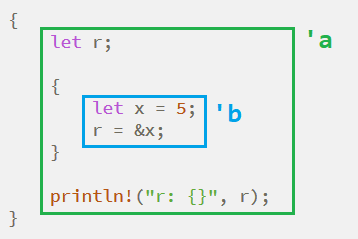
上图中的绿色范围 'a 表示 r 的生命周期，蓝色范围 'b 表示 x 的生命周期。很显然，'b 比 'a 小得多，引用必须在值的生命周期以内才有效。
一直以来我们都在结构体中使用 String 而不用 &str，我们用一个案例解释原因：
longer 函数取 s1 和 s2 两个字符串切片中较长的一个返回其引用值。但是这段代码不会通过编译，原因是返回值引用可能会返回过期的引用：
这段程序中虽然经过了比较，但 r 被使用的时候源值 s1 和 s2 都已经失效了。当然我们可以把 r 的使用移到 s1 和 s2 的生命周期范围以内防止这种错误的发生，但对于函数来说，它并不能知道自己以外的地方是什么情况，它为了保障自己传递出去的值是正常的，必选所有权原则消除一切危险，所以 longer 函数并不能通过编译。
生命周期注释是描述引用生命周期的办法。
虽然这样并不能够改变引用的生命周期，但可以在合适的地方声明两个引用的生命周期一致。
生命周期注释用单引号开头，跟着一个小写字母单词：
&i32 // 常规引用 &'a i32 // 含有生命周期注释的引用 &'a mut i32 // 可变型含有生命周期注释的引用
让我们用生命周期注释改造 longer 函数：
我们需要用泛型声明来规范生命周期的名称，随后函数返回值的生命周期将与两个参数的生命周期一致，所以在调用时可以这样写：
以上两段程序结合的运行结果：
ecmascript is longer
注意：别忘记了自动类型判断的原则。
这是之前留下的疑问，在此解答：
运行结果：
s.content = string_slice
如果对结构体 Str 有方法定义：
这里返回值并没有生命周期注释，但是加上也无妨。这是一个历史问题，早期 Rust 不支持生命周期自动判断，所有的生命周期必须严格声明，但主流稳定版本的 Rust 已经支持了这个功能。
生命周期注释有一个特别的：'static 。所有用双引号包括的字符串常量所代表的精确数据类型都是 &'static str ，'static 所表示的生命周期从程序运行开始到程序运行结束。
这段程序出自 Rust 圣经，是一个同时使用了泛型、特性、生命周期机制的程序，不强求，可以体验，毕竟早晚用得到！
本章介绍 Rust 语言的 I/O 操作。
命令行程序是计算机程序最基础的存在形式，几乎所有的操作系统都支持命令行程序并将可视化程序的运行基于命令行机制。
命令行程序必须能够接收来自命令行环境的参数，这些参数往往在一条命令行的命令之后以空格符分隔。
在很多语言中（如 Java 和 C/C++）环境参数是以主函数的参数（常常是一个字符串数组）传递给程序的，但在 Rust 中主函数是个无参函数，环境参数需要开发者通过 std::env 模块取出，过程十分简单：
现在直接运行程序：
Args { inner: ["D:\\rust\\greeting\\target\\debug\\greeting.exe"] }也许你得到的结果比这个要长的多，这很正常，这个结果中 Args 结构体中有一个 inner 数组，只包含唯一的字符串，代表了当前运行的程序所在的位置。
但这个数据结构令人难以理解，没关系，我们可以简单地遍历它：
运行结果：
D:\rust\greeting\target\debug\greeting.exe
一般参数们就是用来被遍历的，不是吗。
现在我们打开许久未碰的 launch.json ，找到 "args": []，这里可以设置运行时的参数，我们将它写成 "args": ["first", "second"] ，然后保存、再次运行刚才的程序，运行结果：
D:\rust\greeting\target\debug\greeting.exe first second
作为一个真正的命令行程序，我们从未真正使用过它，作为语言教程不在此叙述如何用命令行运行 Rust 程序。但如果你是个训练有素的开发者，你应该可以找到可执行文件的位置，你可以尝试进入目录并使用命令行命令来测试程序接收命令行环境参数。
早期的章节详细讲述了如何使用命令行输出，这是由于语言学习的需要，没有输出是无法调试程序的。但从命令行获取输入的信息对于一个命令行程序来说依然是相当重要的。
在 Rust 中，std::io 模块提供了标准输入（可认为是命令行输入）的相关功能：
令 VSCode 环境支持命令行输入是一个非常繁琐的事情，牵扯到跨平台的问题和不可调试的问题，所以我们直接在 VSCode 终端中运行程序。在命令行中运行：
D:\rust\greeting> cd ./target/debug D:\rust\greeting\target\debug> ./greeting.exe RUNOOB Your input line is RUNOOB
std::io::Stdio 包含 read_line 读取方法，可以读取一行字符串到缓冲区，返回值都是 Result 枚举类，用于传递读取中出现的错误，所以常用 expect 或 unwrap 函数来处理错误。
注意：目前 Rust 标准库还没有提供直接从命令行读取数字或格式化数据的方法，我们可以读取一行字符串并使用字符串识别函数处理数据。
我们在计算机的 D:\ 目录下建立文件 text.txt，内容如下：
This is a text file.
这是一个将文本文件内容读入字符串的程序：
运行结果：
This is a text file.
在 Rust 中读取内存可容纳的一整个文件是一件极度简单的事情，std::fs 模块中的 read_to_string 方法可以轻松完成文本文件的读取。
但如果要读取的文件是二进制文件，我们可以用 std::fs::read 函数读取 u8 类型集合：
运行结果：
[84, 104, 105, 115, 32, 105, 115, 32, 97, 32, 116, 101, 120, 116, 32, 102, 105, 108, 101, 46]
以上两种方式是一次性读取，十分适合 Web 应用的开发。但是对于一些底层程序来说，传统的按流读取的方式依然是无法被取代的，因为更多情况下文件的大小可能远超内存容量。
Rust 中的文件流读取方式：
运行结果：
[84, 104, 105, 115, 32] [105, 115, 32, 97, 32]
std::fs 模块中的 File 类是描述文件的类，可以用于打开文件，再打开文件之后，我们可以使用 File 的 read 方法按流读取文件的下面一些字节到缓冲区（缓冲区是一个 u8 数组），读取的字节数等于缓冲区的长度。
注意：VSCode 目前还不具备自动添加标准库引用的功能，所以有时出现"函数或方法不存在"一样的错误有可能是标准库引用的问题。我们可以查看标准库的注释文档（鼠标放到上面会出现）来手动添加标准库。
std::fs::File 的 open 方法是"只读"打开文件，并且没有配套的 close 方法，因为 Rust 编译器可以在文件不再被使用时自动关闭文件。
文件写入分为一次性写入和流式写入。流式写入需要打开文件，打开方式有"新建"（create）和"追加"（append）两种。
一次性写入：
这和一次性读取一样简单方便。执行程序之后， D:\text.txt 文件的内容将会被重写为 FROM RUST PROGRAM 。所以，一次性写入请谨慎使用！因为它会直接删除文件内容（无论文件多么大）。如果文件不存在就会创建文件。
如果想使用流的方式写入文件内容，可以使用 std::fs::File 的 create 方法：
这段程序与上一个程序等价。
注意：打开的文件一定存放在可变的变量中才能使用 File 的方法！
File 类中不存在 append 静态方法，但是我们可以使用 OpenOptions 来实现用特定方法打开文件：
运行之后，D:\text.txt 文件内容将变成：
FROM RUST PROGRAM APPEND WORD
OpenOptions 是一个灵活的打开文件的方法，它可以设置打开权限，除append 权限以外还有 read 权限和 write 权限，如果我们想以读写权限打开一个文件可以这样写：
运行之后，D:\text.txt 文件内容将变成：
COVERRUST PROGRAM APPEND WORD
集合（Collection）是数据结构中最普遍的数据存放形式，Rust 标准库中提供了丰富的集合类型帮助开发者处理数据结构的操作。
向量（Vector）是一个存放多值的单数据结构，该结构将相同类型的值线性的存放在内存中。
向量是线性表，在 Rust 中的表示是 Vec<T>。
向量的使用方式类似于列表（List），我们可以通过这种方式创建指定类型的向量：
let vector: Vec<i32> = Vec::new(); // 创建类型为 i32 的空向量 let vector = vec![1, 2, 4, 8]; // 通过数组创建向量
我们使用线性表常常会用到追加的操作，但是追加和栈的 push 操作本质是一样的，所以向量只有 push 方法来追加单个元素：
运行结果：
[1, 2, 4, 8, 16, 32, 64]
append 方法用于将一个向量拼接到另一个向量的尾部：
运行结果：
[1, 2, 4, 8, 16, 32, 64]
get 方法用于取出向量中的值：
运行结果：
1
因为向量的长度无法从逻辑上推断，get 方法无法保证一定取到值，所以 get 方法的返回值是 Option 枚举类，有可能为空。
这是一种安全的取值方法，但是书写起来有些麻烦。如果你能够保证取值的下标不会超出向量下标取值范围，你也可以使用数组取值语法：
运行结果：
2
但如果我们尝试获取 v[4] ，那么向量会返回错误。
遍历向量：
运行结果：
100 32 57
如果遍历过程中需要更改变量的值：
字符串类（String）到本章为止已经使用了很多，所以有很多的方法已经被读者熟知。本章主要介绍字符串的方法和 UTF-8 性质。
新建字符串：
let string = String::new();
基础类型转换成字符串：
let one = 1.to_string(); // 整数到字符串 let float = 1.3.to_string(); // 浮点数到字符串 let slice = "slice".to_string(); // 字符串切片到字符串
包含 UTF-8 字符的字符串：
let hello = String::from("السلام عليكم");
let hello = String::from("Dobrý den");
let hello = String::from("Hello");
let hello = String::from("שָׁלוֹם");
let hello = String::from("नमस्ते");
let hello = String::from("こんにちは");
let hello = String::from("안녕하세요");
let hello = String::from("你好");
let hello = String::from("Olá");
let hello = String::from("Здравствуйте");
let hello = String::from("Hola");
字符串追加：
let mut s = String::from("run");
s.push_str("oob"); // 追加字符串切片
s.push('!'); // 追加字符
用 + 号拼接字符串：
let s1 = String::from("Hello, ");
let s2 = String::from("world!");
let s3 = s1 + &s2;
这个语法也可以包含字符串切片：
let s1 = String::from("tic");
let s2 = String::from("tac");
let s3 = String::from("toe");
let s = s1 + "-" + &s2 + "-" + &s3;
使用 format! 宏：
let s1 = String::from("tic");
let s2 = String::from("tac");
let s3 = String::from("toe");
let s = format!("{}-{}-{}", s1, s2, s3);
字符串长度：
let s = "hello"; let len = s.len();
这里 len 的值是 5。
let s = "你好"; let len = s.len();
这里 len 的值是 6。因为中文是 UTF-8 编码的，每个字符长 3 字节，所以长度为6。但是 Rust 中支持 UTF-8 字符对象，所以如果想统计字符数量可以先取字符串为字符集合：
let s = "hello你好"; let len = s.chars().count();
这里 len 的值是 7，因为一共有 7 个字符。统计字符的速度比统计数据长度的速度慢得多。
遍历字符串：
运行结果：
h e l l o 中 文
从字符串中取单个字符：
运行结果：
Some('中')
注意：nth 函数是从迭代器中取出某值的方法，请不要在遍历中这样使用！因为 UTF-8 每个字符的长度不一定相等！
如果想截取字符串字串：运行结果：
EN
但是请注意此用法有可能肢解一个 UTF-8 字符！那样会报错：
运行结果：
thread 'main' panicked at 'byte index 3 is not a char boundary; it is inside '中' (bytes 2..5) of `EN中文`', src\libcore\str\mod.rs:2069:5 note: run with `RUST_BACKTRACE=1` environment variable to display a backtrace.
映射表（Map）在其他语言中广泛存在。其中应用最普遍的就是键值散列映射表（Hash Map）。
新建一个散列值映射表：
注意：这里没有声明散列表的泛型，是因为 Rust 的自动判断类型机制。
运行结果：
red
insert 方法和 get 方法是映射表最常用的两个方法。
映射表支持迭代器：
运行结果：
("color", "red")
("size", "10 m^2")
迭代元素是表示键值对的元组。
Rust 的映射表是十分方便的数据结构，当使用 insert 方法添加新的键值对的时候，如果已经存在相同的键，会直接覆盖对应的值。如果你想"安全地插入"，就是在确认当前不存在某个键时才执行的插入动作，可以这样：
map.entry("color").or_insert("red");这句话的意思是如果没有键为 "color" 的键值对就添加它并设定值为 "red"，否则将跳过。
在已经确定有某个键的情况下如果想直接修改对应的值，有更快的办法：
面向对象的编程语言通常实现了数据的封装与继承并能基于数据调用方法。
Rust 不是面向对象的编程语言，但这些功能都得以实现。
封装就是对外显示的策略，在 Rust 中可以通过模块的机制来实现最外层的封装，并且每一个 Rust 文件都可以看作一个模块，模块内的元素可以通过 pub 关键字对外明示。这一点在"组织管理"章节详细叙述过。
"类"往往是面向对象的编程语言中常用到的概念。"类"封装的是数据，是对同一类数据实体以及其处理方法的抽象。在 Rust 中，我们可以使用结构体或枚举类来实现类的功能：
下面建造一个完整的类：
输出结果：
from public method from private method
几乎其他的面向对象的编程语言都可以实现"继承"，并用"extend"词语来描述这个动作。
继承是多态（Polymorphism）思想的实现，多态指的是编程语言可以处理多种类型数据的代码。在 Rust 中，通过特性（trait）实现多态。有关特性的细节已在"特性"章节给出。但是特性无法实现属性的继承，只能实现类似于"接口"的功能，所以想继承一个类的方法最好在"子类"中定义"父类"的实例。
总结地说，Rust 没有提供跟继承有关的语法糖，也没有官方的继承手段（完全等同于 Java 中的类的继承），但灵活的语法依然可以实现相关的功能。
安全高效的处理并发是 Rust 诞生的目的之一，主要解决的是服务器高负载承受能力。
并发（concurrent）的概念是指程序不同的部分独立执行，这与并行（parallel）的概念容易混淆，并行强调的是"同时执行"。
并发往往会造成并行。
本章讲述与并发相关的编程概念和细节。
线程（thread）是一个程序中独立运行的一个部分。
线程不同于进程（process）的地方是线程是程序以内的概念，程序往往是在一个进程中执行的。
在有操作系统的环境中进程往往被交替地调度得以执行，线程则在进程以内由程序进行调度。
由于线程并发很有可能出现并行的情况，所以在并行中可能遇到的死锁、延宕错误常出现于含有并发机制的程序。
为了解决这些问题，很多其它语言（如 Java、C#）采用特殊的运行时（runtime）软件来协调资源，但这样无疑极大地降低了程序的执行效率。
C/C++ 语言在操作系统的最底层也支持多线程，且语言本身以及其编译器不具备侦察和避免并行错误的能力，这对于开发者来说压力很大，开发者需要花费大量的精力避免发生错误。
Rust 不依靠运行时环境，这一点像 C/C++ 一样。
但 Rust 在语言本身就设计了包括所有权机制在内的手段来尽可能地把最常见的错误消灭在编译阶段，这一点其他语言不具备。
但这不意味着我们编程的时候可以不小心，迄今为止由于并发造成的问题还没有在公共范围内得到完全解决，仍有可能出现错误，并发编程时要尽量小心！
Rust 中通过 std::thread::spawn 函数创建新线程：
运行结果：
main thread print 0 spawned thread print 0 main thread print 1 spawned thread print 1 main thread print 2 spawned thread print 2
这个结果在某些情况下顺序有可能变化，但总体上是这样打印出来的。
此程序有一个子线程，目的是打印 5 行文字，主线程打印三行文字，但很显然随着主线程的结束，spawn 线程也随之结束了，并没有完成所有打印。
std::thread::spawn 函数的参数是一个无参函数，但上述写法不是推荐的写法，我们可以使用闭包（closures）来传递函数作为参数：
闭包是可以保存进变量或作为参数传递给其他函数的匿名函数。闭包相当于 Rust 中的 Lambda 表达式，格式如下：
|参数1, 参数2, ...| -> 返回值类型 {
// 函数体
}
例如：
运行结果：
inc(5) = 6
闭包可以省略类型声明使用 Rust 自动类型判断机制：
结果没有变化。
运行结果：
main thread print 0 spawned thread print 0 spawned thread print 1 main thread print 1 spawned thread print 2 main thread print 2 spawned thread print 3 spawned thread print 4
join 方法可以使子线程运行结束后再停止运行程序。
这是一个经常遇到的情况：
在子线程中尝试使用当前函数的资源，这一定是错误的！因为所有权机制禁止这种危险情况的产生，它将破坏所有权机制销毁资源的一定性。我们可以使用闭包的 move 关键字来处理：
Rust 中一个实现消息传递并发的主要工具是通道（channel），通道有两部分组成，一个发送者（transmitter）和一个接收者（receiver）。
std::sync::mpsc 包含了消息传递的方法：
运行结果：
Got: hi
子线程获得了主线程的发送者 tx，并调用了它的 send 方法发送了一个字符串，然后主线程就通过对应的接收者 rx 接收到了。
Rust 宏（Macros）是一种在编译时生成代码的强大工具，它允许你在编写代码时创建自定义语法扩展。
宏（Macro）是一种在代码中进行元编程（Metaprogramming）的技术，它允许在编译时生成代码，宏可以帮助简化代码，提高代码的可读性和可维护性，同时允许开发者在编译时执行一些代码生成的操作。
宏在 Rust 中有两种类型：声明式宏（Declarative Macros）和过程宏（Procedural Macros）。
本文主要介绍声明式宏。
在 Rust 中，使用 macro_rules! 关键字来定义声明式宏。
macro_rules! my_macro {
// 模式匹配和展开
($arg:expr) => {
// 生成的代码
// 使用 $arg 来代替匹配到的表达式
};
}声明式宏使用 macro_rules! 关键字进行定义，它们被称为 "macro_rules" 宏。这种宏的定义是基于模式匹配的，可以匹配代码的结构并根据匹配的模式生成相应的代码。这样的宏在不引入新的语法结构的情况下，可以用来简化一些通用的代码模式。
下面是一个简单的宏定义的例子：
说明
下面是一个更复杂的例子，演示了如何使用宏创建一个简单的 vec! 宏，以便更方便地创建 Vec：
在这个例子中，vec! 宏使用了模式匹配，以及 $($element:expr),+ $(,)?) 这样的语法来捕获传递给宏的元素，并用它们创建一个 Vec。
注意，$(,)?) 用于处理末尾的逗号，使得在不同的使用情境下都能正常工作。
过程宏是一种更为灵活和强大的宏，允许在编译时通过自定义代码生成过程来操作抽象语法树（AST）。过程宏在功能上更接近于函数，但是它们在编写和使用上更加复杂。
过程宏的类型：
Copy、Debug）的宏。#[derive(Debug)]。过程宏的实现通常需要使用 proc_macro 库提供的功能，例如 TokenStream 和 TokenTree，以便更直接地操纵源代码。
智能指针（Smart pointers）是一种在 Rust 中常见的数据结构，它们提供了额外的功能和安全性保证，以帮助管理内存和数据。
在 Rust 中，智能指针是一种封装了对动态分配内存的所有权和生命周期管理的数据类型。
智能指针通常封装了一个原始指针，并提供了一些额外的功能，比如引用计数、所有权转移、生命周期管理等。
在 Rust 中，标准库提供了几种常见的智能指针类型，例如 Box、Rc、Arc 和 RefCell。
智能指针的使用场景:
Box<T>。Rc<T> 或 Arc<T>。RefCell<T>。Arc<T>。Mutex<T>。RwLock<T>。Weak<T>。Box<T> 是 Rust 中最简单的智能指针之一，它允许在堆上分配一块内存，并将值存储在这个内存中。
由于 Rust 的所有权规则，使用 Box 可以在堆上创建具有已知大小的数据。
Rc<T>（引用计数指针）允许多个所有者共享数据，它使用引用计数来跟踪数据的所有者数量，并在所有者数量为零时释放数据。
Rc<T> 适用于单线程环境下的数据共享。
Arc<T>（原子引用计数指针）与 Rc<T> 类似，但是可以安全地在多线程环境中共享数据，因为它使用原子操作来更新引用计数。
RefCell<T> 允许在运行时检查借用规则，它使用内部可变性来提供了一种安全的内部可变性模式，允许在不可变引用的情况下修改数据。
但是，RefCell<T> 只能用于单线程环境。
Mutex<T> 是一个互斥锁，它保证了在任何时刻只有一个线程可以访问 Mutex 内部的数据。
RwLock<T> 是一种读取-写入锁，允许多个读取者同时访问数据，但在写入时是排他的。
Weak<T> 是 Rc<T> 的非拥有智能指针，它不增加引用计数，用于解决循环引用问题。
智能指针可以帮助管理数据的生命周期，当智能指针被销毁时，它们会自动释放内存，从而避免了内存泄漏和野指针的问题。
此外，智能指针还允许在创建时指定特定的析构函数，以实现自定义的资源管理。
下面是一个简单的 Rust 智能指针完整实例，该示例使用 Rc<T> 智能指针实现了一个简单的引用计数功能，并演示了多个所有者共享数据的情况。
以上代码中，我们首先定义了一个 Data 结构体，用于存储一个整数值。然后在 main 函数中创建了一个 Rc<Data> 智能指针，用于共享数据。接着通过 Rc::clone 方法克隆了两个智能指针，增加了数据的引用计数。最后打印了数据的值、引用计数和克隆后的智能指针。
运行该程序，可以看到输出了数据的值和引用计数，以及克隆后的智能指针。由于 Rc 智能指针使用引用计数来跟踪数据的所有者数量，因此在每次克隆时，数据的引用计数会增加，当所有者数量为零时，数据会被自动释放。
输出结果如下：
Data value: 5
Reference count: 3
Data clone 1: Data { value: 5 }
Data clone 2: Data { value: 5 }Rust 的智能指针提供了一种安全和自动化的方式来管理内存和共享所有权。
智能指针是 Rust 中非常重要的一种数据结构，它们提供了一种安全、灵活和方便的内存管理方式，帮助程序员避免了常见的内存安全问题，提高了代码的可靠性和可维护性。
智能指针是 Rust 安全性模型的重要组成部分，允许开发者编写低级代码而不必担心内存安全问题。
通过智能指针，Rust 既保持了 C 语言的控制能力，又避免了其风险。
在现代编程中，异步编程变得越来越重要，因为它允许程序在等待 I/O 操作（如文件读写、网络通信等）时不被阻塞，从而提高性能和响应性。
异步编程是一种在 Rust 中处理非阻塞操作的方式，允许程序在执行长时间的 I/O 操作时不被阻塞，而是在等待的同时可以执行其他任务。
Rust 提供了多种工具和库来实现异步编程，包括 async 和 await 关键字、futures 和异步运行时（如 tokio、async-std 等），以及其他辅助工具。
Future：Future 是 Rust 中表示异步操作的抽象。它是一个可能还没有完成的计算，将来某个时刻会返回一个值或一个错误。
async/await：async 关键字用于定义一个异步函数，它返回一个 Future。await 关键字用于暂停当前 Future 的执行，直到它完成。
以下实例展示了如何使用 async 和 await 关键字编写一个异步函数，以及如何在异步函数中执行异步任务并等待其完成。
以上代码中，我们首先定义了一个异步函数 async_task()，该函数模拟了一个异步操作，使用 tokio::time::delay_for() 方法来等待 1 秒钟，然后返回结果 42。接着定义了一个异步任务执行函数 execute_async_task()，在其中调用了异步函数，并使用 await 关键字等待异步任务的完成。最后在 main 函数中使用 tokio::main 宏来运行异步任务执行函数，并等待其完成。
运行该程序，可以看到程序输出了开始执行异步任务的提示，然后等待了 1 秒钟后输出了异步任务的结果，并最终输出了异步任务完成的提示:
Start executing async task... Async task result: 42 Async task completed!
这个例子演示了 Rust 中使用 async 和 await 关键字编写异步函数，以及如何在异步函数中执行异步任务并等待其完成。
以下实例使用 tokio 库执行异步 HTTP 请求，并输出响应结果：
以上代码中，我们首先引入了 tokio 和 reqwest 库，分别用于执行异步任务和进行 HTTP 请求。然后定义了一个异步函数 fetch_url，用于执行异步的 HTTP GET 请求，并返回响应结果。
接着定义了一个异步任务执行函数 execute_async_task，该函数在其中发起了异步 HTTP 请求，并输出响应结果。
最后，在 main 函数中创建了一个 tokio 异步运行时，并在其中执行了异步任务，处理了异步任务的执行结果。
运行该程序，可以看到输出了异步 HTTP 请求的响应结果，实例中请求了 JSONPlaceholder 的一个帖子数据，并打印了其内容。
async 关键字用于定义异步函数，即返回 Future 或 impl Future 类型的函数。异步函数执行时会返回一个未完成的 Future 对象，它表示一个尚未完成的计算或操作。
异步函数可以包含 await 表达式，用于等待其他异步操作的完成。
await 关键字用于等待异步操作的完成，并获取其结果。
await 表达式只能在异步函数或异步块中使用，它会暂停当前的异步函数执行，等待被等待的 Future 完成，然后继续执行后续的代码。
异步函数的返回值类型通常是 impl Future<Output = T>，其中 T 是异步操作的结果类型。由于异步函数的返回值是一个 Future，因此可以使用 .await 来等待异步操作的完成，并获取其结果。
除了定义异步函数外，Rust 还提供了异步块的语法，可以在同步代码中使用异步操作。异步块由 async { } 构成，其中可以包含异步函数调用和 await 表达式。
在 Rust 中，异步任务通常需要在执行上下文中运行，可以使用 tokio::main、async-std 的 task::block_on 或 futures::executor::block_on 等函数来执行异步任务。这些函数会接受一个异步函数或异步块，并在当前线程或执行环境中执行它。
await 后面跟一个 ? 操作符可以传播错误。如果 await 的 Future 完成时返回了一个错误，那么这个错误会被传播到调用者。
Rust 允许为 trait 定义异步方法。这使得你可以为不同类型的对象定义异步操作。
在 Rust 中，异步代码通常在异步运行时（如 Tokio 或 async-std）中执行。这些运行时提供了调度和执行异步任务的机制。
以上代码中，#[tokio::main] 属性宏将 main 函数包装在一个异步运行时中。
Rust 提供了一些异步宏，如 tokio::spawn，用于在异步运行时中启动新的异步任务。
Rust 的标准库提供了异步 I/O 操作，如 tokio::fs::File 和 async_std::fs::File。
Rust 的一些异步运行时提供了异步通道（如 tokio::sync::mpsc），允许在异步任务之间传递消息。
Rust 的异步编程模型 async/await 提供了一种简洁、高效的方式来处理异步操作。
它允许开发者以一种更自然和直观的方式来处理异步操作，同时保持了 Rust 的安全性和性能。
通过 async/await，Rust 为异步编程提供了一流的语言支持，使得编写高效且可读性强的异步程序变得更加容易。